研究所醫學生｜神經藥理
神經系統
藥理治療學 2026
從分子標靶、關鍵試驗到臨床決策
陳培豪 醫師
馬偕紀念醫院 失智防治中心
2026-11-14
今天這堂課，我們用同一條藥理主線走過五個神經疾病。
每一章都從分子標靶出發，接到關鍵試驗的原文數據，最後落在臨床決策與案例題。
01
癲癇
EPILEPSY
- 1ILAE 2025 發作分類與實用定義
- 2八個標靶、鈉通道三態、視丘皮質迴路
- 3選藥：SANAD II、發作型態、交互作用、HLA-B*1502
- 4特殊族群：育齡女性、懷孕、老年與中風後
- 5難治型：cenobamate、精準治療、Kv7、重積狀態
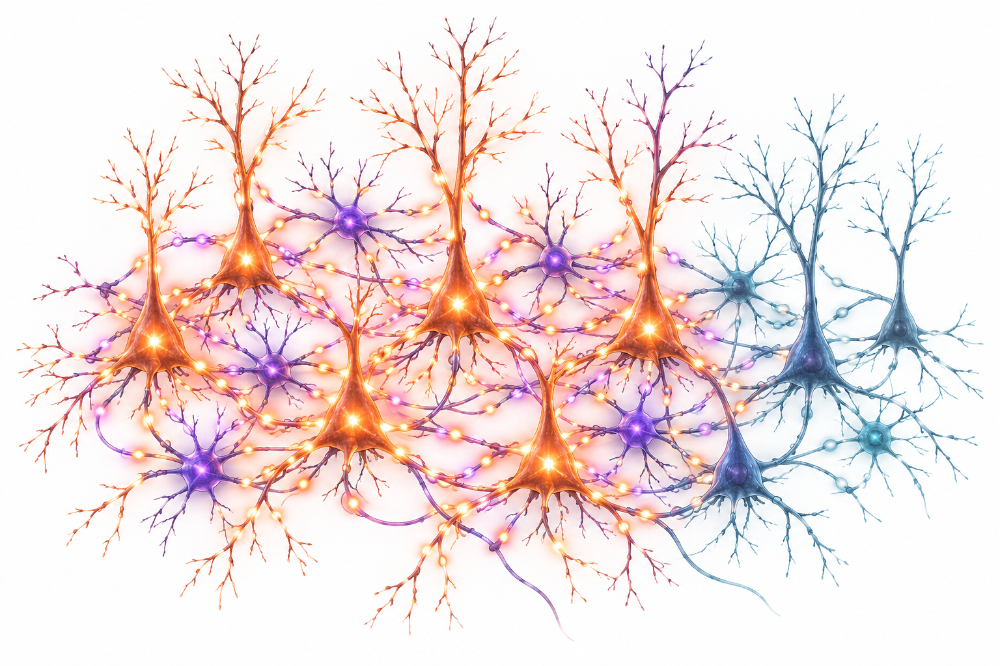
第一章是癲癇。
先講分類與定義，再用機轉圖建立藥理座標，之後進入選藥、特殊族群與難治型。
全球約五千萬人，最多七成可無發作
治療的目標是無發作且可耐受；缺口主要來自診斷與取得治療，而不是缺少藥物
約 5,000 萬
全球癲癇人口
各年齡層皆可發病
最多 70%
可以無發作
前提是正確診斷與治療
近 80%
住在中低收入國家
低收入國家四分之三未獲需要的治療
最高 3 倍
早逝風險
相較一般族群
對本課程的意義：藥理學的重點不是記住更多藥名，而是第一個藥選對、劑量給足、交互作用避開。
第 21 頁會看到：第一個藥失敗後，每多換一種藥，成功機率就大幅下降。
出處：WHO. Epilepsy fact sheet（2024-02-07；who.int/news-room/fact-sheets/detail/epilepsy，查核 2026-09-25）
先看全球負擔，這是 WHO 二〇二四年版的四個數字。
全球約五千萬人，最多七成可以無發作。
但近八成病人住在中低收入國家，早逝風險最高是一般族群的三倍。
所以這門課的重點，是第一個藥選對、劑量給足、交互作用避開。
ILAE 2025 發作分類：四大類
保留四大類；局灶與起源不明者依意識狀態分類；負性肌陣攣正式成為發作型態
局灶 Focal
意識保留
意識受損
意識未確定 → 只寫「局灶」
全身 Generalized
失神發作
全身強直陣攣（GTCS）
其他：含負性肌陣攣（新）
起源不明 Unknown
意識保留
意識受損
未確定 → 只寫「起源不明」
無法分類
資訊不足以分類
分類詞 vs 描述詞
分類詞反映生物學類別並直接影響處置；描述詞記錄其他重要特徵。
基本版 vs 擴充版
擴充版依時間順序描述症狀學，有助推論網絡傳播與手術定位。
出處：Beniczky S, et al. Epilepsia 2025;66:1804–1823. PMID 40264351
ILAE 二〇二五年更新，四大類不變。
局灶發作依意識狀態分類，意識以知覺與反應來操作性定義。
全身型分成失神、全身強直陣攣與其他，新增負性肌陣攣。
起源不明同樣看意識；資訊不足就歸無法分類。
分類詞直接影響處置，描述詞則補充症狀學。
藥理上的意義是：分類決定選藥，後面會看到哪些藥會讓失神與肌陣攣更糟。
何時診斷癲癇、何時開始用藥
ILAE 實用定義：不必等到第二次發作，一次非誘發發作加上高復發風險即可診斷
1
兩次非誘發發作
間隔超過 24 小時（含反射性發作）
2
一次＋高復發風險
未來 10 年復發機率 ≥ 60%，與兩次發作者相當
3
癲癇症候群
符合特定症候群診斷即成立
高復發風險的臨床線索
腦部結構病灶、EEG 癲癇樣放電、夜間發作——決定第一次發作後是否開藥。
「已緩解」（resolved）
年齡相關症候群已過好發年齡；或無發作 10 年且停藥至少 5 年。緩解不等於治癒。
出處：Fisher RS, et al. Epilepsia 2014;55:475–482. PMID 24730690（臨床線索為常用判斷，非定義原文逐字條件）
二〇一四年 ILAE 實用定義有三種情況。
第一，兩次非誘發發作，間隔超過二十四小時。
第二最常用：一次發作，但十年復發風險達六成以上，就和兩次發作者相當。
第三，符合特定癲癇症候群。
臨床上，結構性病灶、腦波癲癇樣放電、夜間發作都是高復發的線索；緩解則不等於治癒。
所以一次發作加上這些線索，就可以直接診斷並開始治療。
抗癲癇藥的八個突觸標靶
不是降低興奮，就是增強抑制；按 → 逐一點亮，或切到原文圖對照
Nav 鈉通道
決定能否重複放電
carbamazepine、lamotrigine、lacosamide
Kv7 鉀通道
讓神經元回到靜止
azetukalner（第三期）
Cav α2δ
減少鈣內流與釋放
gabapentin、pregabalin
SV2A 囊泡蛋白
調節囊泡釋放
levetiracetam、brivaracetam
AMPA 受體
快速興奮性傳導
perampanel
GABA-A 受體
Cl⁻ 內流、過極化
benzodiazepine、phenobarbital
T 型鈣通道
視丘皮質節律
ethosuximide（失神發作）
GABA-T／GAT-1
減少 GABA 分解或回收
vigabatrin、tiagabine
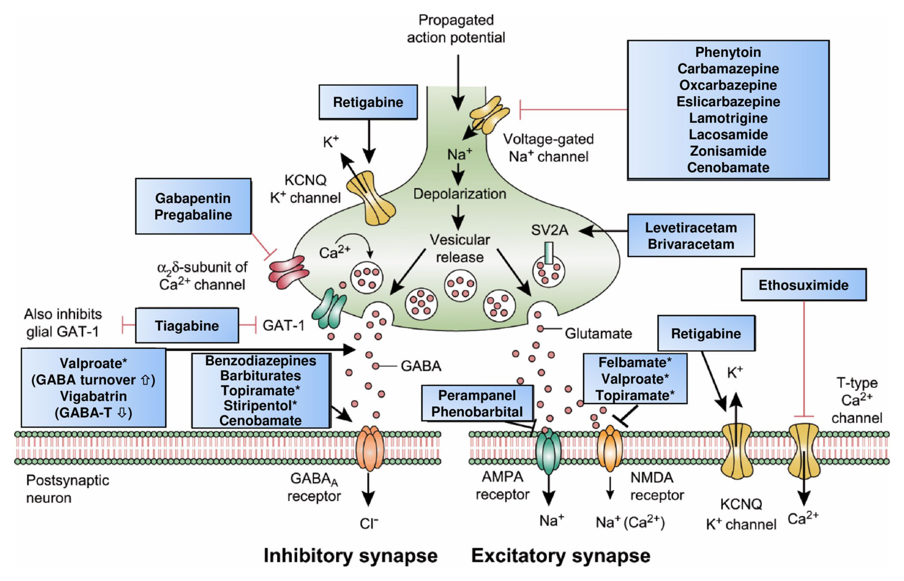
CC BY 4.0 原文圖：Löscher W, Klein P. CNS Drugs 2021;35:935–963, Fig. 5（Mechanism of action of clinically approved antiseizure medications）。
出處：Löscher W, Klein P. CNS Drugs 2021;35:935–963. PMID 34145528｜Perucca E. CNS Drugs 2025;39:263–288. PMID 39853501（Kv7）
發作是興奮與抑制失衡，所以抗癲癇藥不是降低興奮，就是增強抑制。
第一個標靶是鈉通道，決定神經元能不能重複放電；lacosamide 作用在慢失活。
Kv7 開啟劑讓神經元回到靜止；α2δ 是 gabapentinoid 的結合點。
SV2A 是 levetiracetam 與 brivaracetam 的標靶。
突觸後有四個：AMPA、GABA-A、視丘的 T 型鈣通道，以及 GABA 的分解與回收。ethosuximide 只作用在 T 型鈣通道，所以專治失神發作。
紅色是阻斷興奮，綠色是增強抑制；多重機轉的藥要另外記。
這是原文的機轉總圖，課後可以對照著讀。
鈉通道三態：只壓住異常放電
Nav 在靜止、開啟、失活三態間循環；多數阻斷劑優先結合失活態——放電愈快，被結合的通道愈多
①
靜止（關閉）
Resting：可被去極化開啟
②
開啟
Na⁺ 內流、去極化
③
快失活
約 1 毫秒內；再極化後才恢復
carbamazepine、phenytoin、lamotrigine
④
慢失活
持續去極化數秒
lacosamide
正常低頻放電
多數通道有時間恢復，阻斷劑結合少
發作時高頻放電
失活態通道堆積 → 被藥物結合愈多
頻率依賴阻斷
use-dependent block：壓住異常、保留正常
出處：Löscher W, Klein P. CNS Drugs 2021;35:935–963. PMID 34145528
鈉通道在三種狀態之間循環。
靜止的通道被去極化打開，鈉離子內流。
一毫秒內進入快失活；傳統阻斷劑優先結合這個狀態。
lacosamide 的作用點不同，它增強的是慢失活。
放電頻率愈高，處於失活態的通道愈多，被抑制得愈強，這就是頻率依賴。
但要記得，鈉通道阻斷劑可能讓失神與肌陣攣惡化。
GABA-A：同一通道，四種增強方式
GABA-A 是五聚體氯離子通道（2α、2β、1γ）；不同藥物結合不同部位，使 Cl⁻ 內流增加、神經元過極化
| 部位 | 藥物 | 效果 |
|---|---|---|
| ① GABA 位 | GABA（內源） | 開啟通道 |
| ② BZD 位 | diazepam、midazolam、lorazepam | ↑ 開啟頻率 |
| ③ 跨膜區 | phenobarbital；ganaxolone | ↑ 開啟時間；高濃度可直接開啟 |
| ④ 其他位 | cenobamate | 正向調節（兼鈉通道） |
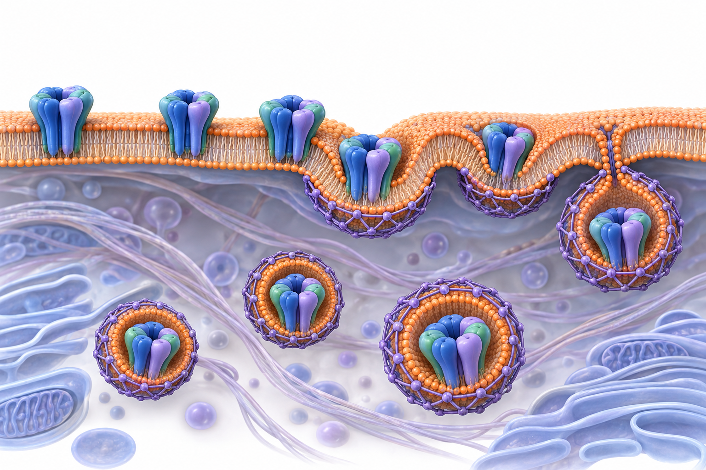
AI 生成示意 重積狀態愈久，突觸後 GABA-A 受體被內吞、表面受體減少（動物研究）
出處：Löscher W, Klein P. CNS Drugs 2021;35:935–963. PMID 34145528｜Naylor DE, et al. J Neurosci 2005;25:7724–7733. PMID 16120773
GABA-A 受體由兩個 α、兩個 β、一個 γ 組成。
benzodiazepine 增加開啟頻率；巴比妥類增加開啟時間，高濃度甚至可以直接開啟，所以呼吸抑制較強。
動物研究顯示，重積狀態時突觸後 GABA-A 受體被內吞，功能性受體減少。
這就是 benzodiazepine 抗藥性的機轉解釋：第一線藥物要早、要足量。
失神發作：視丘皮質迴路與 ethosuximide
網狀核的 GABA 使中繼神經元過極化 → T 型鈣通道去失活 → 反彈爆發放電，形成 3 Hz 棘慢波
視丘網狀核
GABA 神經元
使中繼核過極化
視丘中繼核
T 型鈣通道去失活 → 反彈爆發
ethosuximide、valproate 阻斷
大腦皮質
麩胺酸回饋
3 Hz 棘慢波
兒童失神癲癇 RCT（n = 453）：16 週無治療失敗
出處：Glauser TA, et al. N Engl J Med 2010;362:790–799. PMID 20200383｜Löscher 2021 PMID 34145528
失神發作是視丘皮質迴路的節律異常。
網狀核的 GABA 讓中繼神經元過極化。
T 型鈣通道因此去失活，接著反彈爆發放電；ethosuximide 就阻斷這個通道。
放電回傳到皮質，週而復始形成三赫茲棘慢波。
Glauser 二〇一〇年的試驗：ethosuximide 百分之五十三、valproate 百分之五十八、lamotrigine 百分之二十九。
valproate 的注意力問題較多，所以兒童失神首選 ethosuximide。
SV2A 與 AMPA：LEV 與 perampanel
SV2A 是突觸囊泡膜蛋白，調節神經傳遞物質釋放；perampanel 以非競爭方式阻斷 AMPA 受體
囊泡裝填
麩胺酸
停靠與融合
SV2A 調節；Ca²⁺ 觸發
釋放
進入突觸間隙
AMPA 受體
Na⁺ 內流、快速興奮
Levetiracetam／brivaracetam
結合 SV2A。廣效、交互作用少、有靜脈劑型；易怒、憂鬱等情緒副作用要事先告知。
Perampanel
結合 AMPA 的非麩胺酸位（別構），發作時高濃度麩胺酸擠不掉它；注意攻擊性與精神症狀。
出處：Löscher W, Klein P. CNS Drugs 2021;35:935–963. PMID 34145528
先看麩胺酸從囊泡到受體的路徑。
SV2A 與囊泡釋放機率有關，確切功能仍未完全清楚。
釋放出的麩胺酸作用在 AMPA 受體，造成快速興奮。
levetiracetam 與 brivaracetam 結合 SV2A，廣效且交互作用少。
perampanel 是非競爭性拮抗劑，發作時麩胺酸濃度再高也擠不掉它。
兩者的情緒與行為副作用都要事先告知。
常用 ASM：機轉決定發作譜與副作用
鈉通道阻斷劑多半局灶為主；SV2A、valproate、topiramate 是廣效
| 藥物 | 主要標靶 | 發作譜 | 臨床要點 |
|---|---|---|---|
| Carbamazepine／oxcarbazepine | Na 快失活 | 局灶 | HLA-B*1502、低血鈉、酵素誘導 |
| Phenytoin | Na 快失活 | 局灶、GTCS | 非線性藥動、牙齦增生、誘導劑 |
| Lamotrigine | Na 快失活 | 廣效 | 緩慢滴定防皮疹；VPA 使濃度上升 |
| Lacosamide | Na 慢失活 | 局灶 | PR 間期延長；有靜脈劑型 |
| Levetiracetam／brivaracetam | SV2A | 廣效 | 交互作用少；情緒副作用 |
| Valproate | 多重 | 廣效 | 致畸、肝毒性、體重增加、酵素抑制 |
| Topiramate | 多重 | 廣效 | 認知遲鈍、腎結石、體重下降 |
| Perampanel | AMPA | 局灶、GTCS | 攻擊性、頭暈；長半衰期 |
出處：Löscher W, Klein P. CNS Drugs 2021;35:935–963. PMID 34145528｜健保藥品給付規定 1.3.2（查核 2026-09-25）
這張表請同學用機轉去記。
鈉通道阻斷劑多半以局灶為主；副作用跟機轉或代謝有關，例如 HLA 相關皮膚反應、低血鈉、PR 延長。
SV2A、valproate、topiramate 是廣效。健保上，多數新藥限用於其他藥物無法控制的局部癲癇。
交互作用：誘導劑、抑制劑與荷爾蒙
老一代 ASM 多為肝酵素誘導劑，會降低許多併用藥的濃度；valproate 則是抑制劑
誘導劑 ↓ 別人
CBZ、PHT、PB（高劑量 OXC、TPM）
→ 避孕藥、DOAC、warfarin、statin、其他 ASM 濃度下降
抑制劑 ↑ 別人
valproate 抑制 UGT、CYP2C9
→ lamotrigine 濃度上升：LTG 減量、更慢滴定
荷爾蒙改變 LTG
含雌激素避孕藥：LTG 非孕期清除率再增加 0.33 倍
併用誘導型 ASM：增加 0.84 倍
中風合併癲癇特別要注意：誘導劑會讓 DOAC 濃度下降——第二章抗凝治療時再回來看。
出處：Karanam A, et al. Pharmacotherapy 2025;45:33–42. PMID 39764656（MONEAD 藥動模型）｜Löscher 2021 PMID 34145528
交互作用要記三個方向。
carbamazepine、phenytoin、phenobarbital 是誘導劑，會讓避孕藥失效、DOAC 濃度下降。
valproate 抑制 lamotrigine 的葡萄糖醛酸化，併用時 lamotrigine 要減量，否則皮疹風險上升。
Karanam 二〇二五以 MONEAD 資料建模：雌激素避孕藥讓清除率再增加零點三三倍，誘導劑零點八四倍。
中風病人合併癲癇時，這點特別重要。
誘導劑降低別人、抑制劑提高別人、荷爾蒙改變 lamotrigine。
HLA-B*1502：台灣篩檢讓 SJS 歸零
carbamazepine 經 HLA-B*1502 呈現給 CD8⁺ T 細胞，引發細胞毒性反應；帶因者應改用其他藥物
Carbamazepine
口服吸收
HLA-B*1502
抗原呈現細胞
CD8⁺ T 細胞
T 細胞受體辨識
SJS／TEN
表皮細胞死亡
4,877
台灣 23 家醫院受檢者
7.7%
HLA-B*1502 陽性 → 改用他藥
0 例
陰性者服藥後 SJS／TEN
約 10 例
依歷史發生率 0.23% 預期
出處：Chen P, et al. N Engl J Med 2011;364:1126–1133. PMID 21428768｜Chung WH, et al. Nature 2004;428:486. PMID 15057820｜健保藥品給付規定 1.3.2.6
HLA-B 一五〇二是藥物基因體學落實到全國政策的經典例子。
carbamazepine 經這個 HLA 分子呈現給 T 細胞，引發表皮細胞死亡。
Chen 二〇一一年在台灣二十三家醫院篩檢四千八百多人，百分之七點七陽性者改用他藥。
陰性者服藥後沒有任何 SJS 或 TEN，而依歷史發生率應有約十例。
這已寫入健保規定：開藥前先查 IC 卡註記。
案例：服 CBZ 的女性要避孕
26 歲女性，局灶型癲癇以 carbamazepine 控制穩定，HLA-B*1502 陰性；想開始口服避孕藥
出處：Löscher 2021 PMID 34145528｜Karanam A, et al. Pharmacotherapy 2025;45:33–42. PMID 39764656｜Tomson T, et al. Lancet Neurol 2018;17:530–538. PMID 29680205
來看第一個案例：服用 carbamazepine 的年輕女性想開始口服避孕藥。
直接開避孕藥的問題是，carbamazepine 是誘導劑，避孕可能失效。
比較好的做法是換成非誘導型抗癲癇藥，或選擇不受誘導影響的避孕方式。
換成 valproate 雖然沒有誘導問題，但致畸風險最高。
育齡女性選藥，交互作用、避孕、未來懷孕三件事要一起想。
SANAD II：局灶選 LTG，全身 VPA 最強
實用型開放標籤試驗；主要終點為達到 12 個月緩解的時間，HR > 1 有利於 lamotrigine 或 valproate
| 比較 | HR（95% CI，ITT） | 結論 |
|---|---|---|
| 局灶：LEV vs LTG（n = 990） | 1.18（0.95–1.47） | 未達不劣性（界限 1.329）；PP 分析 LTG 較佳 |
| 局灶：ZNS vs LTG | 1.03（0.83–1.28） | 達不劣性；PP 分析 LTG 較佳 |
| 全身／未分類：LEV vs VPA（n = 520） | 1.19（0.96–1.47） | 未達不劣性（界限 1.314）；PP 分析 VPA 較佳 |
育齡女性仍避免 valproate：療效最好，但致畸風險最高（下兩頁）。
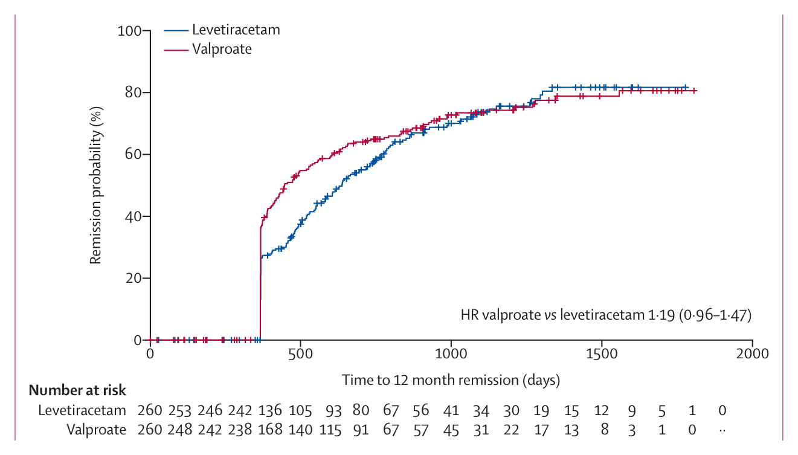
CC BY 4.0 原文圖：Marson A, et al. Lancet 2021;397:1375–1386, Figure 2（levetiracetam vs valproate，12 個月緩解時間，ITT）。
出處：Marson A, et al. Lancet 2021;397:1363–1374. PMID 33838757｜Lancet 2021;397:1375–1386. PMID 33838758
SANAD II 是實用型開放標籤試驗。
局灶型：levetiracetam 對 lamotrigine 的風險比一點一八，上限超過不劣性界限，沒有證明不劣。
zonisamide 則證明不劣，但依計畫書分析 lamotrigine 仍較佳。
全身型：levetiracetam 對 valproate 同樣未證明不劣，valproate 最有效；但育齡女性要避開。
這是全身型的原文曲線，前五百天 valproate 明顯較快達到緩解。
依發作型態選藥，也要避開惡化藥
同一個藥在不同發作型態可能有效、無效，甚至惡化——這是分類要做對的理由
| 發作／症候群 | 優先選擇 | 可能惡化，應避免 |
|---|---|---|
| 局灶型 | lamotrigine、levetiracetam；zonisamide、lacosamide | — |
| 全身強直陣攣 | valproate（非育齡）、levetiracetam、lamotrigine | — |
| 兒童失神 | ethosuximide；valproate | carbamazepine、phenytoin、vigabatrin、tiagabine |
| 肌陣攣（含 JME） | valproate（非育齡）、levetiracetam | carbamazepine、phenytoin、lamotrigine |
| Dravet 症候群 | fenfluramine、cannabidiol、stiripentol | 鈉通道阻斷劑 |
出處：Marson 2021 PMID 33838757、33838758｜Glauser 2010 PMID 20200383｜Lagae 2019 PMID 31862249｜Löscher 2021 PMID 34145528
這張表把前面的機轉串起來。
新診斷局灶型以 lamotrigine 為首選；全身強直陣攣 valproate 最有效，但限非育齡。
失神要避開鈉通道阻斷劑和增加 GABA 的藥；lamotrigine 在部分肌陣攣病人會加重。
Dravet 因為抑制性中間神經元的 Nav1.1 功能喪失，鈉通道阻斷劑會惡化。
記住：選對藥，也要避開會讓發作更糟的藥。
育齡女性：八種 ASM 畸形率差近四倍
EURAP 國際前瞻登錄，7,355 例單一藥物暴露的懷孕；重大先天畸形（MCM）盛行率依藥物與受孕時劑量而不同
劑量依存
CBZ、LTG、PB、VPA 的風險隨受孕時劑量上升；校正後，VPA 與 CBZ 各劑量皆高於 LTG ≤ 325 mg／日。
臨床做法
避免以 valproate 為一線；優先 LEV、LTG，用最低有效劑量。
出處：Tomson T, et al. Lancet Neurol 2018;17:530–538. PMID 29680205（長條長度依原文百分比等比例繪製）
EURAP 是目前樣本最大的前瞻登錄。
levetiracetam、lamotrigine、oxcarbazepine 約百分之三，接近一般族群背景值。
topiramate、carbamazepine、phenytoin、phenobarbital 在百分之四到六點五。
valproate 約一成。
第二個重點是劑量依存：同一個藥，低劑量與高劑量風險不同。
臨床上，懷孕前就要把藥調好。
懷孕全程：調藥、追濃度、產後減量
lamotrigine 清除率在孕期大幅上升、產後數週內回落；MONEAD 前瞻世代與藥動模型
1
受孕前
換成低致畸藥物、最低有效劑量；開始補充葉酸
2
第一孕期
器官形成期；避免 valproate
3
第二、三孕期
LTG 清除率可升至基線 275%；依濃度調整
4
產後
清除率數週內回落；逐步減回孕前劑量
孕婦 LTG 清除率大幅上升（其餘 9% 幾乎不變）
清除率達最大增幅一半的時間點
6 歲語言指數：暴露 vs 對照（95% CI −3.2 至 1.9）
出處：Karanam A, et al. Pharmacotherapy 2025;45:33–42. PMID 39764656｜Meador KJ, et al. JAMA Neurol 2025;82:30–39. PMID 39585668
懷孕管理有四個時點。
受孕前就換成低致畸藥物、補充葉酸；第一孕期是器官形成期。
百分之九十一孕婦 lamotrigine 清除率最高升到基線的兩倍七成五，十二週時達到一半增幅。
產後清除率在數週內回落，要記得減量。
MONEAD 六歲結果：暴露組與對照組的語言指數沒有差異，不過七成八是 lamotrigine 或 levetiracetam。
另外百分之九幾乎不變，所以不能一律加藥，要看濃度。
老年與中風後癲癇：先看交互作用
中風是老年新發癲癇的重要病因；中風後發作與較差預後相關，屬觀察性資料
中風後發作與結果的關聯（統合分析，OR）
早發性發作與死亡相關（OR 2.4）；晚發性未達顯著（OR 1.2；95% CI 0.8–2.0）。只能說相關。
交互作用
酵素誘導劑會降低 DOAC、warfarin、statin 濃度。
電解質、骨骼與跌倒
CBZ、OXC 易致低血鈉；誘導劑與骨質流失相關；鎮靜藥物增加跌倒。
常用選擇
lamotrigine、levetiracetam：起始劑量低、滴定慢。
出處：Misra S, et al. JAMA Neurol 2023;80:1155–1165. PMID 37721736｜Löscher W, Klein P. CNS Drugs 2021;35:935–963. PMID 34145528
中風是老年新發癲癇的重要病因。
統合分析：中風後發作與死亡、功能預後差、失智相關。這是觀察性資料，只能說相關，不能說發作造成這些結果。
選藥第一個考量是交互作用，誘導劑會降低 DOAC 與 statin。
還要注意低血鈉、骨質流失與跌倒。
lamotrigine 與 levetiracetam 是常用選擇，起始劑量低、滴定慢。
案例：JME 女性準備懷孕
24 歲女性，青少年肌陣攣癲癇（JME），valproate 1,000 mg／日無發作三年；計畫一年內懷孕
出處：Tomson T, et al. Lancet Neurol 2018;17:530–538. PMID 29680205｜Marson A, et al. Lancet 2021;397:1375–1386. PMID 33838758
第二個案例：青少年肌陣攣癲癇的女性，計畫一年內懷孕。
維持 valproate 等懷孕後再說，太晚了，器官形成期很早就開始。
換成 carbamazepine 會讓肌陣攣惡化。
比較好的是受孕前逐步轉成 levetiracetam，並補充葉酸。
分類與懷孕資料一起決定答案。
兩種藥失敗後，換藥效益急遽下降
ILAE 定義藥物難治：兩種可耐受、選擇與使用適當的 ASM 方案未能達到持續無發作
Glasgow 30 年世代（n = 1,795）：各方案新增的 1 年無發作機率
每多失敗一種，對下一方案無反應的勝算（95% CI 1.56–1.91）
出處：Kwan P, et al. Epilepsia 2010;51:1069–1077. PMID 19889013｜Chen Z, et al. JAMA Neurol 2018;75:279–286. PMID 29279892
Chen 二〇一八年追蹤一千七百多位新診斷病人三十年。
第一個藥就有百分之五十點五達到一年無發作。
第二個方案再加百分之十一點六，第三個四點四，之後全部加起來只有二點一。
每多失敗一種，下一個方案無反應的勝算增加七成三。
所以兩種藥失敗就要轉介，而不是一直換藥。
Cenobamate：高反應率，劑量相關副作用
雙重機轉：抑制持續性鈉電流，並正向調節 GABA-A 受體；C017 試驗，難治局灶型 437 人
維持期 ≥ 50% 反應率
發作頻率中位數變化
安慰劑 −24.0%；100 mg −35.5%；200 mg 與 400 mg 皆 −55.0%
因副作用停藥
安慰劑 5%、100 mg 10%、200 mg 14%；400 mg 組 90% 有不良事件
出處：Krauss GL, et al. Lancet Neurol 2020;19:38–48. PMID 31734103｜Löscher 2021 PMID 34145528
cenobamate 有雙重機轉：抑制持續性鈉電流，加上 GABA-A 正向調節。
C017 試驗的反應率隨劑量上升：百分之二十五、四十、五十六、六十四。
發作頻率中位數在二百與四百毫克都下降百分之五十五。
代價是劑量相關的中樞副作用。
早期快速滴定曾出現藥物疹合併嗜酸性白血球增多，現在採慢速滴定；台灣健保目前未收載。
Dravet：抑制性神經元的鈉通道失能
SCN1A 失功能突變使 Nav1.1 減少；Nav1.1 主要影響抑制性中間神經元，結果是去抑制
SCN1A 失功能
單一對偶基因
Nav1.1 ↓
抑制性中間神經元鈉電流減少
GABA 輸出 ↓
錐體細胞去抑制
難治發作
發熱誘發、重積
Fenfluramine（n = 119）：發作頻率中位數下降
Cannabidiol 20 mg/kg／日（n = 120）
痙攣發作每月中位數 12.4 → 5.9（安慰劑 14.9 → 14.1）；調整後中位數差 −22.8 個百分點
出處：Yu FH, et al. Nat Neurosci 2006. PMID 16921370｜Lagae L, et al. Lancet 2019. PMID 31862249｜Devinsky O, et al. N Engl J Med 2017;376:2011–2020. PMID 28538134
Dravet 症候群是精準治療的好例子。
SCN1A 失功能讓抑制性中間神經元的鈉電流減少，結果是整個網絡去抑制。
fenfluramine 零點七毫克組，發作中位數下降百分之七十五，安慰劑十九。
cannabidiol 讓痙攣發作從每月十二次降到六次。
這也解釋了為什麼鈉通道阻斷劑會讓 Dravet 惡化。
新標靶 Kv7：azetukalner
Kv7.2／7.3（KCNQ2/3）產生 M 電流，穩定靜止膜電位；開啟劑使神經元較難被重複激發
Azetukalner
Kv7.2／7.3 開啟劑
M 電流 ↑
K⁺ 外流
膜電位穩定
過極化
重複放電 ↓
發作閾值上升
X-TOLE 第 2b 期（n = 325）：局灶發作中位數下降
開放延伸 24 個月
發作頻率中位數較基線下降 83.2%；第三期試驗進行中
前車之鑑
前代 retigabine 因色素沉著於 2017 年退市
出處：French JA, et al. JAMA Neurol 2023. PMID 37812429｜French JA, et al. Epilepsia Open 2025. PMID 40053315｜Perucca E. CNS Drugs 2025;39:263–288. PMID 39853501
Kv7 通道產生的 M 電流是神經元的煞車。
KCNQ2 突變本身會造成新生兒癲癇；反過來打開它，就能抗癲癇。
X-TOLE 呈劑量反應：二十五毫克組發作中位數下降百分之五十二點八，安慰劑十八點二。
開放延伸二十四個月時下降八成三；前一代 retigabine 因色素沉著退場，第三期結果尚待發表。
癲癇重積狀態：時間就是受體
t1 = 5 分鐘開始治療、t2 = 30 分鐘出現長期傷害風險；拖愈久，GABA-A 受體內化愈多
0–5′
穩定
生命徵象、血糖、建立管路
5–20′
第一線
IM midazolam、IV lorazepam、IV diazepam（Level A）
20–40′
第二線
levetiracetam、fosphenytoin、valproate
> 40′
難治
麻醉劑量 midazolam、propofol 等；連續 EEG
ESETT（n = 384）：60 分鐘發作停止且意識改善
出處：Trinka E, et al. Epilepsia 2015. PMID 26336950｜Glauser T, et al. Epilepsy Curr 2016. PMID 26900382｜Kapur J, et al. N Engl J Med 2019. PMID 31774955
ILAE 以五分鐘與三十分鐘兩個時間點定義重積狀態。
前五分鐘先穩定生命徵象與血糖。
第一線 benzodiazepine；沒有靜脈管路時，肌肉注射 midazolam 優於靜脈 lorazepam。
第二線看 ESETT：三個藥都在百分之四十五到四十七，沒有差異。
超過四十分鐘進入難治階段，需要麻醉劑量與連續腦波。
選擇看禁忌：懷孕與肝病避開 valproate，心律不整避開 fosphenytoin。
案例：重積第二線怎麼選？
32 歲女性，懷孕 20 週，全身強直陣攣持續 12 分鐘，已給 IV lorazepam 足量仍未停止
出處：Kapur J, et al. N Engl J Med 2019. PMID 31774955｜Glauser T, et al. Epilepsy Curr 2016. PMID 26900382｜Tomson 2018 PMID 29680205
第三個案例：懷孕二十週，重積狀態，第一線 lorazepam 無效。
ESETT 說三者相當，但懷孕要避開 valproate。
選 levetiracetam：療效相當，交互作用少，孕期資料較多。
再等下去只會讓受體內化更多。
療效相當時，選擇就看禁忌。
藥物之外：手術、神經調控、飲食
藥物難治者應盡早評估手術；無法切除時考慮神經調控
| 方式 | 作用原理 | 適合對象 |
|---|---|---|
| 切除性手術 | 移除致癲癇區（如內側顳葉硬化） | 病灶明確且可安全切除 |
| 雷射間質熱治療 | MRI 導引熱燒灼深部病灶 | 深部小病灶、希望微創 |
| 迷走神經刺激 | 上行傳入調節腦幹與皮質網絡 | 無法切除、多灶或全身型 |
| 反應式神經刺激 | 偵測發作起始後即時電刺激 | 一至兩個致癲癇區、位於功能區 |
| 深部腦刺激（視丘前核） | 調節邊緣系統網絡 | 局灶型難治 |
| 生酮飲食 | 酮體改變神經元能量與興奮性 | 兒童難治、GLUT1 缺乏症 |
出處：Fisher R, et al. Epilepsia 2010;51:899–908. PMID 20331461（SANTE）｜Kwan P, et al. Epilepsia 2010. PMID 19889013
兩種藥失敗的病人，下一步是癲癇中心的術前評估。
可切除的病灶首選手術，深部小病灶可以用雷射熱治療。
無法切除時考慮神經調控：迷走神經、反應式刺激、深部腦刺激。
生酮飲食是 GLUT1 缺乏症的首選。
SANTE 試驗：盲性期發作下降百分之四十，兩年時中位數下降五成六。
癲癇小結：五件要帶走的事
把機轉、試驗與特殊族群串成一條決策線
1
分類決定選藥
失神、肌陣攣、Dravet 避開鈉通道阻斷劑
2
用機轉記藥
Na、GABA-A、SV2A、α2δ、AMPA、T 型鈣、Kv7
3
第一個藥最重要
首藥 50.5% 無發作；兩種失敗即轉介
4
育齡女性
避免 valproate；LTG 孕期清除率升至 275%
5
藥物基因體
CBZ 前查 HLA-B*1502；台灣篩檢使 SJS 歸零
出處：Beniczky 2025 PMID 40264351｜Marson 2021 PMID 33838757｜Tomson 2018 PMID 29680205｜Chen 2018 PMID 29279892｜Chen 2011 PMID 21428768
癲癇段落的小結。
分類決定選藥、用機轉記藥、第一個藥最重要、育齡女性避免 valproate、開 carbamazepine 前查 HLA。
下一章是腦中風，會從血栓的藥理標靶開始。
02
腦中風
STROKE
- 1缺血瀑布、半暗帶與「時間窗→組織窗」
- 2溶栓：alteplase 到 tenecteplase；延長時間窗
- 3取栓：大核心梗塞也能獲益
- 4次級預防：DAPT、CYP2C19、DOAC 時機、FXI、LDL
- 5腦出血：照護組合、抗凝反轉、微創手術
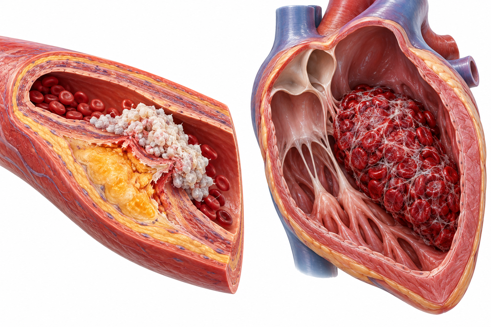
第二章是腦中風。
先講缺血的病理生理，再講再灌流藥理，最後是次級預防與腦出血。
缺血瀑布：幾分鐘內走向細胞死亡
血流中斷 → ATP 耗竭 → 去極化與麩胺酸釋放 → Ca²⁺ 超載；發炎與血腦障壁破壞在數小時到數天內接續
分鐘
血流中斷
氧與葡萄糖停止
ATP 衰竭
Na⁺/K⁺-ATPase 失效
去極化
麩胺酸大量釋放
Ca²⁺ 超載
經 NMDA／AMPA
小時到天
蛋白酶、自由基
粒線體傷害
壞死與凋亡
核心區不可逆
發炎、BBB 破壞
水腫、出血轉化
修復與重塑
數週到數月
出處：Moskowitz MA, Lo EH, Iadecola C. Neuron 2010;67:181–198. PMID 20670828
缺血發生後，細胞死亡的速度是以分鐘計算。
沒有氧氣就沒有 ATP，鈉鉀幫浦失效、細胞去極化，大量麩胺酸經 NMDA 與 AMPA 造成鈣離子超載。
接下來數小時到數天，是蛋白酶、自由基、發炎與血腦障壁破壞。
這些都是潛在的神經保護標靶，但臨床轉譯多半失敗，所以今天的重點是再灌流。
半暗帶：可救的組織決定時間窗
核心區已不可逆；周圍的半暗帶功能停擺但仍存活——影像看到可救組織，就可能延長治療時間
核心
半暗帶
血流減少但無危險
時間窗 → 組織窗
過去以發病時間決定；現在以灌流或 MRI 評估核心與半暗帶不匹配，選出仍可獲益的病人。
半暗帶會被核心吞噬
側支循環決定速度：側支好的人，半暗帶可以撐更久。
TRACE-III
4.5–24 小時、無法取栓者，影像選病後 TNK 仍改善預後（第 34 頁）。
出處：Moskowitz 2010 PMID 20670828｜Xiong Y, et al. N Engl J Med 2024;391:203–212. PMID 38884324｜Prabhakaran S, et al. Stroke 2026;57:e316–e436. PMID 41582814
這張圖是再灌流治療的核心概念。
中間的核心已經死亡，周圍的半暗帶功能停擺但細胞仍活著。
所以臨床從時間窗走向組織窗：用影像看還有沒有可救的組織。
半暗帶會隨時間被核心吞噬，速度取決於側支循環。
TRACE-III 就在四點五到二十四小時、以影像選病的病人，證明 TNK 仍然有效。
白色與紅色血栓：抗血小板或抗凝
動脈粥狀硬化以血小板為主（白色血栓）；心房顫動以凝血為主（紅色血栓）——這決定了用藥方向
血小板活化
COX-1 → TXA₂
aspirin（不可逆）
ADP → P2Y12
clopidogrel、ticagrelor
PDE3 → cAMP↓
cilostazol
凝血瀑布
FXIa
asundexian（研究中）
FXa
rivaroxaban、apixaban、edoxaban
凝血酶 FIIa
dabigatran；warfarin 減少合成
AI 生成示意 左：斑塊破裂上的血小板血栓；右：心房內的纖維蛋白紅血栓
出處：Kleindorfer DO, et al. Stroke 2021;52:e364–e467. PMID 34024117｜Sharma M, et al. N Engl J Med 2026;394:1467–1479. PMID 41985132
血栓分兩種，用藥方向完全不同。
血小板有三條路：aspirin 抑制 COX-1，clopidogrel 與 ticagrelor 阻斷 P2Y12，cilostazol 抑制 PDE3。
凝血瀑布：DOAC 抑制 Xa 或凝血酶，warfarin 減少維生素 K 依賴因子的合成，最新的是第十一因子抑制劑。
粥狀硬化斑塊破裂上是白色血栓，心房裡流速慢形成的是紅色血栓。
記住底下這句話，就能選對藥。
溶栓藥理：TNK 是改造過的 tPA
tPA 在纖維蛋白表面把纖溶酶原轉為纖溶酶；三處突變讓 TNK 清除變慢、對 PAI-1 抗性更高，可單次推注
纖溶酶原
tPA／TNK 結合纖維蛋白後活化
纖溶酶
PAI-1 抑制 tPA
纖維蛋白分解
血栓溶解
| Alteplase | Tenecteplase | |
|---|---|---|
| 給藥 | 0.9 mg/kg：10% 推注＋60 分鐘輸注 | 0.25 mg/kg 單次推注 |
| 清除 | 半衰期約 6 分鐘 | 清除較慢（兔 1.9 vs 16.1 mL/min/kg） |
| PAI-1 抗性／纖維蛋白專一性 | — | 高 80 倍／高 14 倍（動物與體外） |
出處：Keyt BA, et al. Proc Natl Acad Sci U S A 1994;91:3670–3674. PMID 8170967｜Menon BK, et al. Lancet 2022;400:161–169. PMID 35779553
溶栓劑本身不溶解血栓，它活化纖溶酶原成纖溶酶，由纖溶酶分解纖維蛋白。
tPA 被 PAI-1 抑制、半衰期約六分鐘，所以需要一小時輸注。
TNK 三處改造：清除變慢、PAI-1 抗性高八十倍、纖維蛋白專一性高十四倍，所以可以單次推注。
臨床劑量用零點二五毫克每公斤。
TNK：四個第三期試驗皆不劣
4.5 小時內可溶栓者；療效相當、症狀性出血相當，給藥更簡單
ATTEST-2（英國，n = 1,777）
mRS 分佈 OR 1.07（95% CI 0.90–1.27）：不劣但未優
症狀性顱內出血
AcT 3.4% vs 3.2%；TRACE-2 2% vs 2%；ORIGINAL 1.2% vs 1.2%
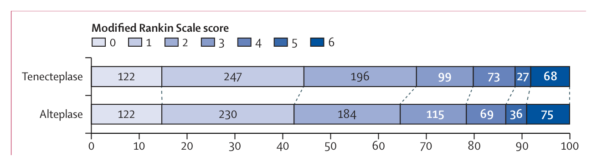
CC BY 4.0 原文圖：Muir KW, et al. Lancet Neurol 2024;23:1087–1096, Figure 2（第 90 天 mRS 分佈，上 TNK、下 alteplase）。
出處：Menon 2022 PMID 35779553｜Wang 2023 PMID 36774935｜Meng 2024 PMID 39264623｜Muir 2024 PMID 39424558（各試驗族群不同，絕對值不可跨試驗比）
四個試驗橫跨加拿大、中國、英國，結論一致。
AcT：百分之三十六點九對三十四點八。
TRACE-2 與 ORIGINAL 同樣不劣；各試驗族群嚴重度不同，絕對值不能跨試驗比。
ATTEST-2 不劣但未優；症狀性出血在各試驗都相當。
這是 ATTEST-2 的原文分佈圖，兩組幾乎重疊。
延長時間窗：關鍵在能不能取栓
TIMELESS 與 TRACE-III 都是 4.5–24 小時、灌流影像選病，但結果相反
| TIMELESS（n = 458） | TRACE-III（n = 516） | |
|---|---|---|
| 族群 | 大血管阻塞；77.3% 接著取栓 | 無法取栓（救援取栓 < 2%） |
| 主要結果 | mRS 分佈 cOR 1.13（0.82–1.57）：無差異 | mRS 0–1：33.0% vs 24.2%（RR 1.37） |
| 死亡 | 19.7% vs 18.2% | 13.3% vs 13.1% |
| 症狀性出血 | — | 3.0% vs 0.8% |
出處：Albers GW, et al. N Engl J Med 2024;390:701–711. PMID 38329148｜Xiong Y, et al. N Engl J Med 2024;391:203–212. PMID 38884324
兩個試驗都用影像選病，結果卻相反。
差別在族群：TIMELESS 有七成七接著取栓，TRACE-III 幾乎沒有人取栓。
TIMELESS 沒有差異；TRACE-III 讓 mRS 零到一從百分之二十四提高到三十三。
代價是症狀性出血百分之三對零點八。
對取栓資源有限的地區，這是很重要的證據。
大核心梗塞：過去禁忌，現在可取栓
ASPECTS 3–5 或核心體積 ≥ 50 mL；三個試驗都因療效提前終止
| 試驗 | OR（95% CI；> 1 有利取栓） | 重點 |
|---|---|---|
| SELECT2（n = 352） | 1.51（1.20–1.89） | 功能獨立 20% vs 7%（RR 2.97）；1 年仍有效（genOR 1.43），死亡 45% vs 52% |
| ANGEL-ASPECT（n = 456） | 1.37（1.11–1.69） | 症狀性出血 6.1% vs 2.7% |
| TENSION（n = 253） | 2.58（1.60–4.15） | 只用 CT 或 MRI 選病；症狀性出血 6% vs 5% |
出處：Sarraj A, et al. N Engl J Med 2023. PMID 36762865；Lancet 2024. PMID 38346442｜Huo X, et al. N Engl J Med 2023. PMID 36762852｜Bendszus M, et al. Lancet 2023. PMID 37837989
大核心梗塞過去被視為取栓禁忌，理由是再灌流後出血與無效。
SELECT2 功能獨立百分之二十對七，一年追蹤仍有效。
ANGEL-ASPECT 與 TENSION 結果一致；TENSION 只用 CT 或 MRI 選病。
代價是症狀性出血略增。
2026 AHA/ASA 指引：五個更新方向
取代 2018 版與 2019 更新；文獻檢索至 2024 年底，重要研究補到 2025 年 3 月
1
溶栓藥物
選擇與適應症納入 tenecteplase 新證據
2
取栓適應症
擴大到大核心梗塞與更長時間窗的影像選病
3
溶栓禁忌
調整傳統禁忌清單的判斷方法
4
高血糖與吞嚥
急性期照護的更新建議
5
兒童族群
首次聚焦討論兒童中風
本頁只列摘要層級的方向；逐條建議與證據等級請以指引原文為準，台灣腦中風學會本土指引另行確認。
出處：Prabhakaran S, et al. Stroke 2026;57:e316–e436. PMID 41582814
二〇二六年 AHA 與 ASA 指引取代了二〇一八年版。
最重要的兩個方向：溶栓藥物納入 tenecteplase，取栓適應症擴大。
另外是溶栓禁忌的判斷方法、高血糖與吞嚥，以及首次討論兒童中風。
細節請以原文為準。
急性期目標：血壓、血糖、體溫
再灌流前後的血壓門檻不同；目的都是在保護半暗帶灌流與降低出血之間取得平衡
| 情境 | 目標 | 藥理重點 |
|---|---|---|
| 溶栓前 | < 185/110 mmHg | labetalol、nicardipine 等可滴定靜脈藥 |
| 溶栓後 24 小時 | < 180/105 mmHg | 密集監測；出血風險期 |
| 未接受再灌流 | ≥ 220/120 才積極降壓 | 保留腦灌流壓 |
| 血糖 | 140–180 mg/dL | 胰島素；避免低血糖與過度控制 |
| 體溫 | > 38 °C 找原因 | 發燒與預後較差相關 |
出處：Prabhakaran S, et al. Stroke 2026;57:e316–e436. PMID 41582814（數值依 AHA/ASA 歷版指引；2026 版細節以原文核對）
急性期的生理目標。
溶栓前要低於一八五對一一〇，溶栓後二十四小時維持一八〇對一〇五以下。
沒有接受再灌流的人，門檻放寬到二二〇對一二〇，因為半暗帶靠灌流壓維持。
血糖控制在一四〇到一八〇，發燒要找原因。
急性期不是血壓愈低愈好。
案例：急性中風的藥物路徑
70 歲，左側無力 2 小時，NIHSS 12，CTA 右 M1 阻塞，心電圖心房顫動
1
排除出血
非顯影 CT／MRI
2
TNK 0.25 mg/kg
血壓 < 185/110
3
取栓
大血管阻塞
4
早期 DOAC
依梗塞大小決定天數
5
次級預防
LDL、血壓、心律追蹤
此例不用 DAPT
心因性栓塞的長期預防是抗凝，不是雙重抗血小板。
如果是輕度粥狀硬化型
NIHSS ≤ 3 或高風險 TIA：clopidogrel＋aspirin 21 天。
出處：Prabhakaran 2026 PMID 41582814｜Fischer 2023 PMID 37222476｜Werring 2024 PMID 39491870（NIHSS 門檻依各試驗收案條件）
用一個典型個案把前面串起來。
第一步永遠是排除出血。
兩小時內、無禁忌，給 TNK 單次推注，血壓先控制在一八五對一一〇以下。
M1 阻塞，接著取栓。
心房顫動，之後早期開始 DOAC，天數依梗塞大小。
長期追蹤 LDL、血壓與心律。
這個病人不需要雙重抗血小板；如果換成輕度粥狀硬化型，才走 DAPT 二十一天。
同一個中風，藥物取決於時間影像、血管阻塞與病因。
DAPT：短期、早期、輕度中風
復發風險集中在第一週；DAPT 在這段時間收益最大，拉長就只剩出血
| 試驗 | 族群與時機 | 方案 | 中風／缺血事件 | 出血 |
|---|---|---|---|---|
| CHANCE（n = 5,170） | 輕度中風、TIA；24 小時內 | C＋A 21 天→C | 8.2% vs 11.7%（HR 0.68） | 0.3% vs 0.3% |
| POINT（n = 4,881） | 輕度中風、高風險 TIA | C＋A 90 天 | 5.0% vs 6.5%（HR 0.75） | 重大出血增加 |
| INSPIRES（n = 6,100） | 粥狀硬化；72 小時內 | C＋A 21 天 | 7.3% vs 9.2%（HR 0.79） | 0.9% vs 0.4% |
| CHANCE-2（n = 6,412） | CYP2C19 失功能帶因者 | T＋A vs C＋A | 6.0% vs 7.6%（HR 0.77） | 0.3% vs 0.3% |
出處：Wang Y 2013 NEJM PMID 23803136｜Johnston SC 2018 NEJM PMID 29766750｜Gao Y 2023 NEJM PMID 38157499｜Wang Y 2021 NEJM PMID 34708996
雙重抗血小板的重點是短、早、輕。
CHANCE 確立了輕度中風與 TIA 二十四小時內的二十一天方案。
POINT 用九十天，重大出血增加，所以臨床多採二十一天。
INSPIRES 把時間窗延到七十二小時，對象是粥狀硬化病因。
CHANCE-2 針對 CYP2C19 失功能帶因者，改用 ticagrelor。
下一頁講為什麼。
CYP2C19：有些人吃 clopidogrel 沒效
clopidogrel 是前驅藥，需經肝臟 CYP2C19 兩步驟活化；失功能帶因者活性代謝物不足。ticagrelor 直接作用
Clopidogrel
口服前驅藥
CYP2C19
肝臟兩步驟活化；*2、*3 失功能
活性硫醇代謝物
不可逆結合
P2Y12 ⊣
血小板抑制
Ticagrelor
直接、可逆結合 P2Y12，不需 CYP2C19 活化
6,412
入組帶因者（篩檢 11,255）
HR 0.77
90 天中風 6.0% vs 7.6%
出處：Wang Y, et al. N Engl J Med 2021;385:2520–2530. PMID 34708996
clopidogrel 需要 CYP2C19 兩步驟轉成活性代謝物，才能不可逆地結合 P2Y12。
帶有二號、三號失功能對偶基因者，活性代謝物不足，效果打折。
ticagrelor 直接作用，不需要活化。
CHANCE-2 入組六千多位帶因者，ticagrelor 組九十天中風百分之六點零對七點六。
受試者幾乎都是漢族，外推要保守；這是藥物基因體學在中風的例子。
口服抗凝劑：標靶、腎臟與反轉
DOAC 直接抑制單一凝血因子，起效快、交互作用少；腎功能與反轉劑是選藥的兩個實務關鍵
| 藥物 | 標靶 | 特性 | 腎排除 | 反轉 |
|---|---|---|---|---|
| Warfarin | VKORC1 | 需 INR 監測；食物與藥物交互作用多 | 低 | 維生素 K＋PCC |
| Dabigatran | 凝血酶（IIa） | 前驅藥（etexilate） | 最高 | idarucizumab |
| Rivaroxaban | Xa | 高劑量隨餐吸收較佳 | 中 | andexanet 或 PCC |
| Apixaban | Xa | 每日兩次 | 較低 | andexanet 或 PCC |
| Edoxaban | Xa | 每日一次 | 中 | PCC |
出處：Connolly SJ, et al. N Engl J Med 2024;390:1745–1755. PMID 38749032｜Kleindorfer DO, et al. Stroke 2021. PMID 34024117（腎排除為相對比較，劑量依仿單）
口服抗凝劑分三類。
warfarin 抑制維生素 K 環氧化物還原酶，需要 INR 監測。
dabigatran 直接抑制凝血酶，腎排除比例最高，有專一抗體 idarucizumab 可以反轉。
其餘三種抑制 Xa，反轉用 andexanet 或 PCC。
最後一行呼應癲癇章的交互作用。
AF 中風後何時抗凝：早一點不危險
兩個大型試驗都顯示：早期開始 DOAC 沒有增加出血，缺血事件不增反減或相當
ELAN（n = 2,013，30 天）
主要複合終點 2.9% vs 4.1%；風險差 −1.18 個百分點（95% CI −2.84 至 0.47）；復發缺血性中風 1.4% vs 2.5%
OPTIMAS（n = 3,621，90 天）
早期（≤ 4 天）vs 延後（7–14 天）：3.3% vs 3.3%，早期不劣
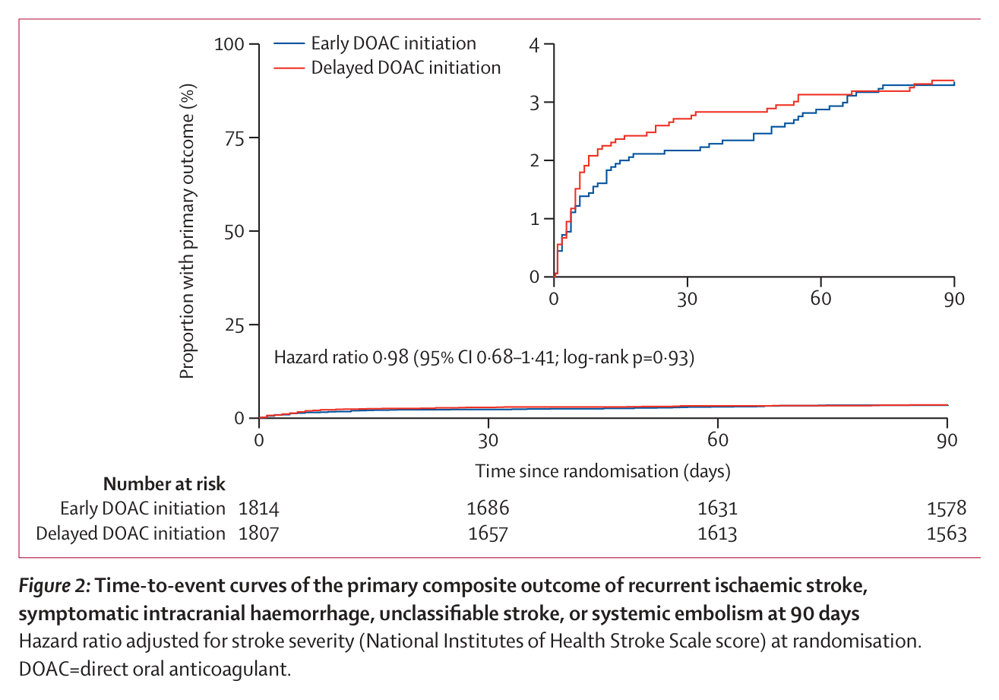
CC BY 4.0 原文圖：Werring DJ, et al. Lancet 2024;404:1731–1741, Figure 2。
出處：Fischer U, et al. N Engl J Med 2023;388:2411–2421. PMID 37222476｜Werring DJ, et al. Lancet 2024;404:1731–1741. PMID 39491870
過去依嚴重度等三、六、十二天才開抗凝，擔心出血轉化。
ELAN 早期組主要事件百分之二點九對四點一。
OPTIMAS 兩組都是百分之三點三，早期不劣。
這是 OPTIMAS 的原文曲線，兩條線幾乎重疊。
早期的定義依梗塞大小，細節見原文。
FXIa 抑制：缺血性中風再降 26%
OCEANIC-STROKE｜非心因性中風或高風險 TIA，抗血小板之上加 asundexian 50 mg
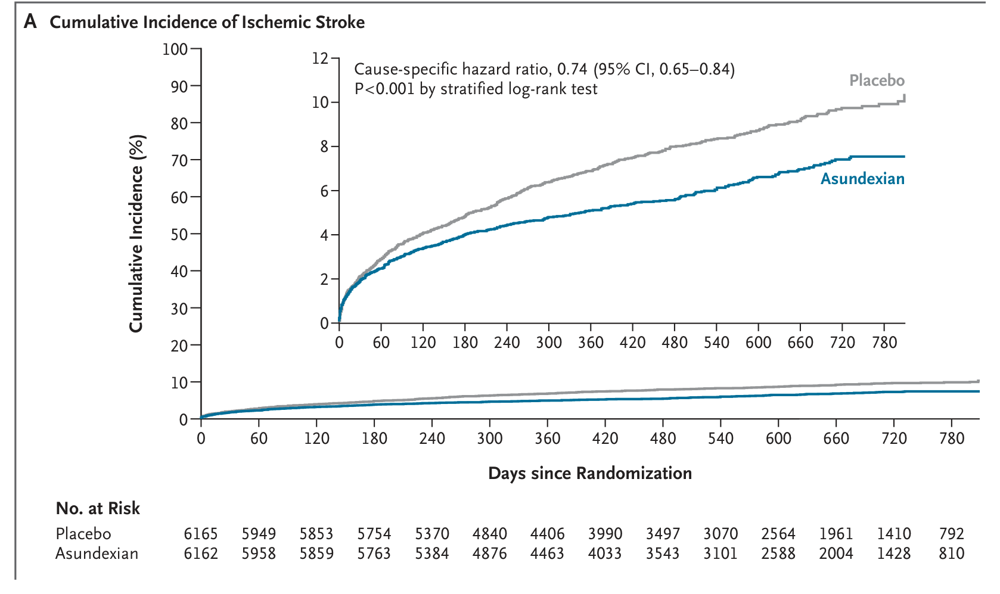
CC BY 原文圖：Sharma M, et al. N Engl J Med 2026;394:1467–1479, Fig. 1A。
缺血性中風（主要療效終點）
6.2% vs 8.4%
HR 0.74（95% CI 0.65–0.84）｜中位追蹤 19 個月
ISTH 重大出血（主要安全終點）
1.9% vs 1.7%
HR 1.10（95% CI 0.85–1.44）｜n = 12,327
出處：Sharma M, et al. N Engl J Med 2026;394:1467–1479. PMID 41985132｜NeurologyLive 2026-05-19, neurologylive.com（2026-11-02 擷取）
OCEANIC-STROKE 是 2026 年最重要的中風次級預防試驗。
左邊是原文的累積發生率曲線，兩條線在前兩個月就分開，之後持續拉開。
缺血性中風 6.2% 對 8.4%，風險比 0.74；重大出血 1.9% 對 1.7%，沒有顯著增加。
美國 FDA 在五月受理並給予優先審查，台灣目前還沒有上市。
案例：AF 中風後能改用 asundexian？
72 歲男性，非瓣膜性 AF，中風後第 10 天正服用 apixaban；家屬看到新聞來問
出處：Piccini JP, et al. N Engl J Med 2025;392:23–32. PMID 39225267（OCEANIC-AF）｜Sharma M, et al. N Engl J Med 2026;394:1467–1479. PMID 41985132
請大家想一想：心房顫動的病人，能不能把 apixaban 換成 asundexian？
選 A 的同學要注意，OCEANIC-STROKE 只收非心因性中風。
答案是 B。同樣 50 毫克，在心房顫動與 apixaban 正面對決，中風或全身栓塞反而多了三倍，試驗提前停止。
兩者併用也沒有證據，只會疊加出血。
記住這句話：白色血栓加一點抗凝有益，紅色血栓需要足夠的抗凝。
降血脂：LDL < 70 優於 100 mg/dL
Treat Stroke to Target：有粥狀硬化證據的缺血性中風或 TIA（n = 2,860，追蹤中位數 3.5 年）
HMG-CoA 還原酶
statin
NPC1L1 腸道吸收
ezetimibe
PCSK9
PCSK9 抗體
肝細胞 LDL 受體 ↑
血中 LDL ↓
65 vs 96
達成 LDL（mg/dL）
8.5% vs 10.9%
主要心血管事件
HR 0.78
95% CI 0.61–0.98
無差異
顱內出血、新診斷糖尿病
出處：Amarenco P, et al. N Engl J Med 2020;382:9–19. PMID 31738483｜Kleindorfer DO, et al. Stroke 2021. PMID 34024117
降 LDL 有三個藥理標靶。
statin、ezetimibe、PCSK9 抗體，最終都讓肝細胞表面的 LDL 受體增加。
TST 低目標組 LDL 達六十五，主要心血管事件百分之八點五對十點九，風險比零點七八。
顱內出血沒有增加。
次級預防：血壓、血糖、心律
依病因選抗栓藥之外，危險因子控制決定長期復發率
| 標靶 | 建議目標或做法 | 藥理重點 |
|---|---|---|
| 血壓 | 多數 < 130/80 mmHg | thiazide、ACEI／ARB、長效 CCB |
| LDL | 粥狀硬化者 < 70 mg/dL | statin → ezetimibe → PCSK9 抗體 |
| 糖尿病 | 個別化 HbA1c 目標 | 選擇具心血管證據的降血糖藥 |
| 心房顫動 | 隱性心房顫動要主動偵測 | 確診後以抗凝取代抗血小板 |
| 生活型態 | 戒菸、運動、地中海型飲食 | — |
出處：Kleindorfer DO, et al. Stroke 2021;52:e364–e467. PMID 34024117｜Amarenco P 2020 PMID 31738483
次級預防的危險因子目標。
血壓一三〇對八〇、LDL 七十，是兩個最常被問到的數字。
糖尿病個別化；隱源性中風要做長時間心律監測，找到心房顫動就改用抗凝。
生活型態一樣重要。
心房顫動是最容易漏掉的一項。
腦出血：血腫擴大是最能介入的時機
原發傷害來自血腫佔位；接著是血腫擴大（數小時內）與次發傷害（凝血酶、鐵、發炎、水腫）
1
血管破裂
高血壓小血管病、類澱粉血管病
預防：控制血壓；評估抗栓必要性
2
血腫擴大
數小時內；抗凝者更明顯
早期降壓＋抗凝反轉
3
次發傷害
凝血酶、血紅素與鐵、發炎
研究中：抗發炎、鐵螯合
4
水腫與佔位
數天內高峰
微創清除（ENRICH）
出處：Keep RF, Hua Y, Xi G. Lancet Neurol 2012;11:720–731. PMID 22698888｜Ma L, et al. Lancet 2023. PMID 37245517
腦出血的四個階段，各有對應的介入。
第一段是血管破裂，靠血壓控制預防。
第二段血腫擴大發生在數小時內，是藥物最能介入的時機：降壓與抗凝反轉。
第三段是次發傷害，目前多仍在研究。
第四段是佔位與水腫，手術在這裡介入。
腦出血約佔中風一到一成五。
INTERACT3：四件事一起做更有效
照護組合：早期積極降壓、高血糖、發燒、抗凝異常的處置流程；10 國 121 家醫院、階梯式群集隨機分派
降壓
早期積極降低收縮壓
血糖
高血糖處置流程
體溫
發燒處置流程
抗凝
快速反轉
修正意向治療分析人數
功能預後不良（95% CI 0.76–0.97）
照護組合組嚴重不良事件
出處：Ma L, et al. Lancet 2023;402:27–40. PMID 37245517（各項具體目標值請見原文）
INTERACT3 不是測一個藥，而是測一套流程。
早期積極降壓、高血糖、發燒與抗凝異常，四件事一起處理。
七千多人，功能預後不良的共同勝算比零點八六。
嚴重不良事件也較少。
在資源有限的醫院，把已知有益的事同時做好，就能改善預後。
反轉：andexanet 止血好，血栓多
ANNEXA-I（n = 530）：Xa 抑制劑相關腦出血，andexanet 對照常規治療（85.5% 使用 PCC）
機轉：誘餌蛋白
andexanet 是無活性的 Xa，把 Xa 抑制劑「吸走」：抗 Xa 活性下降 94.5% vs 26.9%
取捨
止血差 13.4 個百分點；血栓事件多 4.6 個百分點
出處：Connolly SJ, et al. N Engl J Med 2024;390:1745–1755. PMID 38749032（台灣可取得性與給付依院內藥事資料）
抗凝相關腦出血要快速反轉。
ANNEXA-I：andexanet 止血有效百分之六十七，常規治療五十三。
但血栓事件百分之十點三對五點六。
andexanet 是沒有凝血活性的 Xa，當作誘餌吸附 Xa 抑制劑。
止血多十三個百分點，血栓多四點六個百分點。
這是典型的取捨。
ENRICH：早期微創清除，腦葉出血獲益
血腫 30–80 mL、24 小時內；經腦溝旁路徑微創清除 vs 內科治療（n = 300，69.3% 為腦葉出血）
180 天效用加權 mRS（後驗優越機率 0.981）
30 天死亡
觸發適應性規則，之後只收腦葉出血
| 部位 | 效用加權 mRS 差（95% 可信區間） | 解讀 |
|---|---|---|
| 腦葉出血 | 0.127（0.035–0.219） | 獲益 |
| 前基底核出血 | −0.013（−0.147–0.116） | 無差異 |
出處：Pradilla G, et al. N Engl J Med 2024;390:1277–1289. PMID 38598795
ENRICH 是三十年來第一個證實腦出血手術改善功能的大型試驗。
效用加權 mRS 零點四五八對零點三七四，三十天死亡百分之九點三對十八。
收到一百七十五人時觸發適應性規則，之後只收腦葉出血。
因為效益集中在腦葉出血，前基底核出血沒有差異。
深部出血目前仍沒有手術證據。
案例：DOAC 相關腦出血怎麼反轉？
78 歲女性，AF 服 apixaban，最後一劑 3 小時前；右額葉出血 25 mL，血壓 190/100
出處：Connolly SJ, et al. N Engl J Med 2024;390:1745–1755. PMID 38749032｜Ma L, et al. Lancet 2023;402:27–40. PMID 37245517
案例：服用 apixaban 的心房顫動病人，發生腦出血。
idarucizumab 只能反轉 dabigatran，標靶不對。
Xa 抑制劑用 andexanet 或 PCC，同時早期降壓；andexanet 止血較好但血栓較多，要權衡。
出血不是缺血，血壓不能放著不管。
反轉看標靶。
中風後併發症：憂鬱、痙攣、癲癇
藥物不能取代復健；目標是處理會阻礙復健與生活品質的併發症
| 併發症 | 證據 | 臨床做法 |
|---|---|---|
| 預防性 SSRI | FOCUS（n = 3,127）：fluoxetine 6 個月，mRS 無改善（cOR 0.951）；新憂鬱 13.4% vs 17.2%；骨折 2.9% vs 1.5% | 不常規用於促進恢復；確診憂鬱再治療 |
| 痙攣 | 肉毒桿菌毒素局部注射 | 健保給付須事前審查 |
| 中風後癲癇 | 早發性發作與死亡相關（OR 2.4） | 避開酵素誘導劑；見癲癇章 |
出處：FOCUS Trial Collaboration. Lancet 2019;393:265–274. PMID 30528472｜Misra S 2023 PMID 37721736｜健保藥品給付規定 1.6.2
中風後併發症的藥理。
FOCUS 很重要：三千多人的大試驗，fluoxetine 沒有改善功能，新發憂鬱減少、骨折增加，所以不常規使用。
痙攣以肉毒桿菌毒素局部治療，健保有事前審查。
中風後癲癇要避開酵素誘導劑。
藥物不能取代復健。
腦中風小結：五件要帶走的事
再灌流、組織窗、病因、DAPT、新標靶
1
再灌流是核心
TNK 0.25 mg/kg 單次推注，不劣於 alteplase
2
組織窗
大核心與延長時間窗，影像選病仍可能獲益
3
依病因選抗栓
粥狀硬化 → 抗血小板；AF → 抗凝
4
DAPT 短而早
21 天；CYP2C19 失功能可考慮 ticagrelor
5
新標靶 FXI
粥狀硬化型有效；AF 不如 apixaban
出處：Menon 2022 PMID 35779553｜Sarraj 2023 PMID 36762865｜Wang 2013 PMID 23803136｜Sharma 2026 PMID 41985132｜Amarenco 2020 PMID 31738483
腦中風段落的小結。
再灌流是核心、組織窗、依病因選抗栓、雙重抗血小板短而早、第十一因子是新標靶。
下一章是頭痛。
03
頭痛
HEADACHE
- 1紅旗徵象與 ICHD-3 診斷
- 2三叉神經血管系統：CGRP、PACAP、5-HT 受體
- 3急性治療：triptan、gepant、ditan 的比較效益
- 4預防治療：傳統口服藥、CGRP 抗體、gepant、Botox
- 5健保給付、藥物過度使用、叢發性頭痛
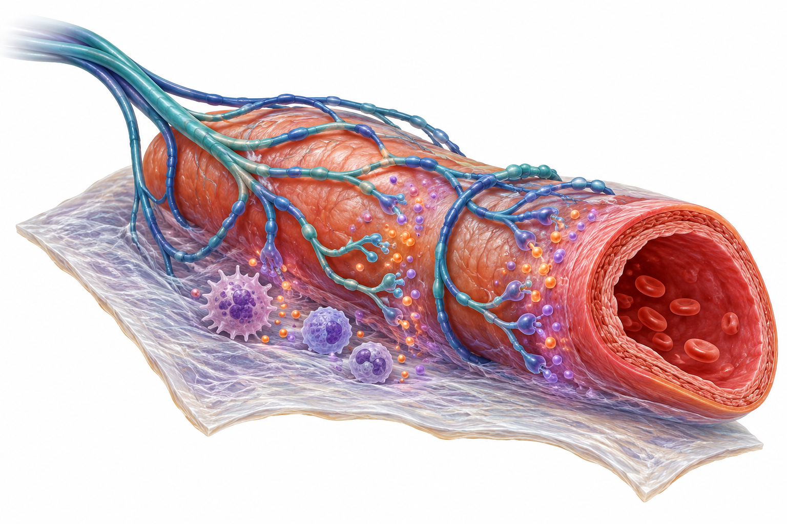
第三章是頭痛。
重點在三叉神經血管系統的藥理，以及 CGRP 標靶治療在美國指引與台灣健保之間的落差。
先排除次發性頭痛：SNNOOP10
原發頭痛才輪得到藥理學；新發或型態改變的頭痛，先用紅旗篩檢
S／N／N
全身症狀含發燒；腫瘤病史；神經學缺損（含意識改變）
O／O
突發（雷擊樣）；65 歲以後才發作
P：型態與誘發
型態改變或新發；姿勢性；打噴嚏、咳嗽、運動誘發
P：體徵與病程
視乳突水腫；進行性或非典型表現
P：族群
懷孕或產後；外傷後發作；免疫病理（如 HIV）
P：其他
眼痛合併自律神經症狀；止痛藥過度使用或新藥
出處：Do TP, et al. Neurology 2019;92:134–144. PMID 30587518
開藥之前，先排除次發性頭痛，SNNOOP10 共十五項紅旗。
全身症狀、腫瘤病史、神經學缺損、雷擊樣突發、六十五歲以後才發作。
型態改變、姿勢性、咳嗽或運動誘發、視乳突水腫、進行性。
懷孕或產後、外傷後、免疫病理，以及止痛藥過度使用或新藥。
系統化篩檢可以提高抓到次發病因的機會，也減少不必要的影像。
ICHD-3：偏頭痛、慢性偏頭痛、MOH
診斷決定藥物；慢性偏頭痛與 MOH 的界定，也直接決定台灣健保的 CGRP 抗體給付門檻
| 診斷 | 核心條件 |
|---|---|
| 無預兆偏頭痛 | ≥ 5 次發作；每次 4–72 小時；單側、搏動、中重度、活動加劇四項中 ≥ 2 項；噁心嘔吐或畏光畏聲 ≥ 1 項（5-4-3-2-1） |
| 慢性偏頭痛 | 頭痛每月 ≥ 15 天、持續 > 3 個月，其中 ≥ 8 天符合偏頭痛特徵或對偏頭痛專一藥物有效 |
| 藥物過度使用性頭痛 | 原有頭痛每月 ≥ 15 天；單純止痛藥 ≥ 15 天，或 triptan、麥角、鴉片、複方 ≥ 10 天，持續 > 3 個月 |
出處：Headache Classification Committee of the IHS. Cephalalgia 2018;38:1–211. PMID 29368949｜健保藥品給付規定 1.6.5
ICHD-3 的三個診斷。
無預兆偏頭痛可以用五、四、三、二、一來記。
慢性偏頭痛是每月十五天以上，其中八天符合偏頭痛特徵。
藥物過度使用：止痛藥十五天，或 triptan 等十天以上；兩者可以同時診斷。
健保的慢性偏頭痛定義，額外要求每次持續四小時以上。
偏頭痛是感覺處理的疾病
腦膜末梢釋放 CGRP → 三叉神經節 → 腦幹三叉神經脊核 → 視丘 → 皮質；下視丘在前驅期就已異常
腦膜血管與神經末梢
神經性發炎、血管擴張
三叉神經節
CGRP、PACAP 合成
三叉神經脊核（腦幹）
中樞敏感化
視丘 → 皮質
痛覺、畏光畏聲；皮質擴散性抑制＝預兆
下視丘、腦幹調節核
前驅期即異常：打哈欠、口渴、畏光
AI 生成示意 三叉神經末梢在腦膜血管周圍釋放神經胜肽
出處：Goadsby PJ, et al. Physiol Rev 2017;97:553–622. PMID 28179394
Goadsby 把偏頭痛定位為感覺處理的疾病，而不是血管病。
腦膜的三叉神經末梢釋放神經胜肽，訊號回到三叉神經節。
再到腦幹三叉神經脊核造成中樞敏感化，經視丘到皮質；皮質擴散性抑制對應預兆。
前驅期下視丘就已經異常，解釋了打哈欠、口渴等前驅症狀。
下一頁把 CGRP 與 PACAP 的阻斷點放大。
CGRP／PACAP：五個阻斷點
同一條三叉神經血管痛覺訊號鏈；點下方任一阻斷點，訊號鏈上對應的位置會標亮
三叉神經末梢
5-HT1B/1D/1F 受體調控神經胜肽釋放
CGRP／PACAP 配體
釋放到腦膜血管周圍
受體
CGRP 受體（CLR＋RAMP1）；PAC1／VPAC
出處：Charles AC, et al. Headache 2024;64:333–341. PMID 38466028｜Ashina M, et al. N Engl J Med 2024;391:800–809. PMID 39231342
CGRP 與 PACAP 都是三叉神經末梢釋放的神經胜肽，造成血管擴張、神經性發炎與敏感化。
第一種阻斷方式，是抓住配體的單株抗體。
第二種，是佔住受體的 erenumab。
第三種，是小分子受體拮抗劑 gepant，可以急性用，也可以預防用。
第四種，是新的 PACAP 抗體，目前在第二期。
第五種是從上游減少釋放：triptan 作用在 1B 與 1D，有血管收縮禁忌；lasmiditan 只作用 1F，沒有血管收縮，但會嗜睡、頭暈。
Triptan 與 ditan：差別在血管
triptan 作用 5-HT1B（血管收縮）與 5-HT1D（抑制神經胜肽釋放）；lasmiditan 只作用 5-HT1F
5-HT1B
腦膜與冠狀動脈平滑肌
血管收縮
5-HT1D
三叉神經末梢
減少 CGRP 釋放
5-HT1F
三叉神經與中樞神經元
抑制痛覺傳遞
Triptan（1B＋1D）禁忌
冠狀動脈疾病、中風病史、未控制高血壓——因為 5-HT1B 也在冠狀動脈。
Lasmiditan（只有 1F）的代價
需穿過血腦障壁：頭暈、嗜睡；服藥後 8 小時內不宜開車。
出處：Goadsby 2017 PMID 28179394｜Kuca B, et al. Neurology 2018;91:e2222–e2232. PMID 30446595
三個受體亞型的分佈決定了藥效與禁忌。
triptan 同時作用一 B 與一 D；一 B 在冠狀動脈也有。
lasmiditan 只作用一 F，沒有血管收縮。
所以 triptan 在冠心病、中風病史、未控制高血壓禁用。
lasmiditan 的代價是中樞副作用，服藥後八小時內不要開車。
受體決定藥效，也決定禁忌。
急性治療比較：triptan 仍最有效
BMJ 2024 網絡統合：137 個 RCT、89,445 人、17 種藥物；eletriptan、rizatriptan、sumatriptan、zolmitriptan 效果最好
2 小時無痛：對安慰劑的勝算比（範圍兩端）
全部優於安慰劑
17 種主動治療皆是；24 小時持續無痛以 eletriptan 與 ibuprofen 最佳
新藥的定位
lasmiditan、rimegepant、ubrogepant 效果不如最佳 triptan；價值在 triptan 禁忌或無效者
台灣急性準則：分層
輕中度 NSAID；中重度 triptan 早期服用；急性藥物每月 ≤ 10 天
出處：Karlsson WK, et al. BMJ 2024;386:e080107. PMID 39293828（CC BY 4.0）｜台灣頭痛學會急性治療準則 2017. PMID 29250761
Karlsson 二〇二四年 BMJ 是目前最大的急性偏頭痛網絡統合分析。
兩小時無痛的勝算比，從 naratriptan 的一點七三到 eletriptan 的五點一九。
所有十七種藥都優於安慰劑。
新藥不如最好的 triptan，價值在 triptan 禁忌或無效的病人。
台灣準則採分層治療，並提醒急性藥物每月十天以內。
沒有血管收縮的急性選項
各自與安慰劑比較的第三期試驗；族群與終點定義不同，不可跨試驗比大小
2 小時無痛（%）
Gepant
CGRP 受體小分子拮抗劑；無血管收縮；rimegepant 兼具急性與預防適應症
Lasmiditan
SAMURAI 77.9% 受試者有心血管危險因子；頭暈最常見
出處：Dodick DW 2019 NEJM PMID 31800988｜Lipton RB 2019 NEJM PMID 31291516｜Kuca B 2018 Neurology PMID 30446595
三個沒有血管收縮作用的急性藥。
ubrogepant 一百毫克，兩小時無痛百分之二十一點二，安慰劑十一點八。
rimegepant 百分之十九點六對十二。
lasmiditan 二百毫克，百分之三十二點二對十五點三。
三者都不收縮血管；台灣上市與給付狀態請依院內藥事資料確認。
案例：冠心病患者的偏頭痛發作
58 歲男性，陣發性偏頭痛 20 年，sumatriptan 有效；去年心肌梗塞置放支架
出處：Kuca B, et al. Neurology 2018. PMID 30446595｜Dodick DW 2019 PMID 31800988｜Karlsson WK 2024 PMID 39293828
案例：去年心肌梗塞的偏頭痛患者。
sumatriptan 雖然有效，但五羥色胺一 B 在冠狀動脈，冠心病是禁忌。
改用 gepant，沒有血管收縮；也可以考慮 lasmiditan，但要提醒不能開車。
麥角類血管收縮更強，同樣不適合。
心血管疾病避開 triptan 與麥角。
MOH：止痛藥變成頭痛的原因
頻繁急性用藥 → 中樞敏感化與痛覺調控失衡 → 頭痛更頻繁 → 更多用藥
頭痛頻繁
急性用藥增加
中樞敏感化
痛覺閾值下降
| 策略（n = 120，6 個月） | 頭痛日變化 | 轉陣發 | MOH 治癒 |
|---|---|---|---|
| 停藥＋同時預防 | −12.3 | 74.2% | 96.8% |
| 只給預防 | −9.9 | 60.0% | 74.3% |
| 只停藥（2 個月後再議） | −8.5 | 41.7% | 88.9% |
出處：Carlsen LN, et al. JAMA Neurol 2020;77:1069–1078. PMID 32453406｜ICHD-3 PMID 29368949｜台灣頭痛學會預防治療準則 2017. PMID 28752512
藥物過度使用性頭痛是一個惡性循環。
頭痛頻繁、用藥增加、中樞敏感化、痛覺閾值下降，再回到頭痛。
Carlsen 二〇二〇比較三種策略：停藥加同時預防，轉為陣發型百分之七十四，MOH 治癒九成七，都是最高。
所以停藥與預防同時開始，不必先熬過戒斷期。
預防治療：何時開始、怎麼評估
預防藥需要時間起效；低劑量開始、慢慢加量，足量足時間才判定無效
1
評估適應症
頻率高、失能明顯、急性藥無效或過度使用
2
選藥
依共病與禁忌：高血壓、憂鬱、肥胖、懷孕計畫
3
低劑量開始
慢慢加量以減少副作用
4
評估療效
3–4 週後才看得出效果
5
考慮減量
改善維持 6 個月後逐步減藥
常用療效門檻：每月頭痛天數下降
台灣準則：開始評估療效
改善維持後可逐步減藥
出處：台灣頭痛學會預防治療準則 2017. PMID 28752512｜Ailani J, et al. Headache 2021;61:1021–1039. PMID 34160823
預防治療有五個步驟。
先評估適應症，再依共病選藥。
低劑量開始、慢慢加量，三到四週後才看得出效果。
改善維持六個月後可以逐步減藥。
常用的療效門檻是每月頭痛天數下降一半。
預防期間要提醒病人不要過度使用急性藥物。
傳統口服預防藥：選藥看共病
台灣準則：propranolol 為陣發性偏頭痛一線；valproate、topiramate、flunarizine、amitriptyline 為二線
| 藥物 | 類別與推測機轉 | 適合族群 | 要注意 |
|---|---|---|---|
| Propranolol | β 阻斷劑 | 合併高血壓、焦慮 | 氣喘、低血壓、憂鬱 |
| Topiramate | Na⁺、GABA、AMPA、碳酸酐酶 | 肥胖；慢性偏頭痛 | 認知遲鈍、手麻、結石、致畸 |
| Flunarizine | 鈣通道阻斷、D2 拮抗 | 失眠、眩暈 | 嗜睡、體重增加、藥物誘發巴金森症 |
| Amitriptyline | 三環抗憂鬱劑 | 合併失眠、緊縮型頭痛 | 口乾、便秘、嗜睡、抗膽鹼 |
| Valproate | 多重機轉 | 合併雙極性疾患 | 致畸——育齡女性避免 |
出處：台灣頭痛學會預防治療準則 2017. PMID 28752512（偏頭痛預防的確切機轉多數仍不明）
傳統預防藥都是借用其他適應症的藥物。
高血壓用 propranolol、肥胖用 topiramate。
flunarizine 在台灣很常用，但它有 D2 拮抗作用，老年人長期使用可能誘發巴金森症。
這是神經藥理跨章節的重要連結。
CGRP 抗體：四種抗體、兩種標靶
大分子不經肝腎代謝、半衰期長、藥物交互作用少；每月或每季給藥
| 抗體 | 標靶 | 給藥 | 健保 1.6.5 |
|---|---|---|---|
| Erenumab | CGRP 受體 | 70 或 140 mg 皮下，每月 | 未收載 |
| Fremanezumab | CGRP 配體 | 225 mg 每月或 675 mg 每 3 個月，皮下 | 收載 |
| Galcanezumab | CGRP 配體 | 首劑 240 mg，之後每月 120 mg，皮下 | 收載 |
| Eptinezumab | CGRP 配體 | 靜脈輸注，每 3 個月 | 未收載 |
出處：Charles AC, et al. Headache 2024;64:333–341. PMID 38466028｜健保藥品給付規定 1.6.5（查核 2026-09-25；使用前確認最新公告）
四種抗體中，erenumab 抓受體，其他三種抓配體。
erenumab 每月皮下注射。
健保 1.6.5 條目前收載 fremanezumab 與 galcanezumab。
而且只能擇一，不得與 Botox 併用；使用前請確認最新公告。
HER-MES：erenumab 對 topiramate
24 週雙盲雙虛擬（n = 777）；主要終點是因副作用停藥，次要終點是 ≥ 50% 反應率
STRIVE（erenumab，陣發性）
每月偏頭痛日 −3.2（70 mg）、−3.7（140 mg）vs −1.8；≥ 50% 反應 43.3%、50.0% vs 26.6%
Fremanezumab（慢性）
每月頭痛日 −4.3（每季）、−4.6（每月）vs −2.5
出處：Reuter U, et al. Cephalalgia 2022;42:108–118. PMID 34743579｜Goadsby 2017 PMID 29171821｜Silberstein 2017 PMID 29171818
HER-MES 是第一個 CGRP 抗體與傳統預防藥的頭對頭試驗。
因副作用停藥百分之十點六對三十八點九。
一半以上改善的比例百分之五十五對三十一。
右邊是兩個代表性的安慰劑對照試驗。
這是美國頭痛學會把 CGRP 標靶列為一線的依據之一。
口服 gepant 預防：atogepant、rimegepant
小分子 CGRP 受體拮抗劑，每日或隔日口服；陣發性與慢性偏頭痛都有第三期證據
| 試驗 | 族群 | 方案 | 每月偏頭痛日（vs 安慰劑） |
|---|---|---|---|
| ADVANCE | 陣發性（基線 7.5–7.9 天） | atogepant 10／30／60 mg 每日 | −3.7／−3.9／−4.2（−2.5） |
| PROGRESS | 慢性（基線約 19 天） | atogepant 30 mg 每日兩次／60 mg 每日 | −7.5／−6.9（−5.1） |
| Croop 2021 | 陣發或慢性 | rimegepant 75 mg 隔日 | −4.3（−3.5） |
出處：Ailani J 2021 NEJM PMID 34407343｜Pozo-Rosich P 2023 Lancet PMID 37516125｜Croop R 2021 Lancet PMID 33338437
口服 gepant 也能做預防。
ADVANCE 對安慰劑的差距是一點二到一點七天。
PROGRESS 在慢性偏頭痛差一點八到二點四天。
rimegepant 隔日服用，差距約零點八天。
好處是口服、可以隨時停；便秘最需要提醒。
CGRP 定位：AHS 一線 vs 台灣健保
AHS 2024：CGRP 標靶治療是一線預防選項，不需先失敗其他藥；台灣健保仍限於難治性慢性偏頭痛
| AHS 2024 立場聲明 | 台灣健保 1.6.5 | |
|---|---|---|
| 對象 | 偏頭痛預防（陣發或慢性） | 慢性偏頭痛（每月 ≥ 15 天，偏頭痛 ≥ 8 天） |
| 前置條件 | 不需先失敗其他類別 | ≥ 3 種預防藥無效或無法耐受，至少含 topiramate |
| 處方 | — | 神經內科或神經外科專科；事前審查；不得攜回 |
| 續用 | — | 3 個月後頭痛天數下降 ≥ 50% 才續用；療程後半年內不得再申請 |
出處：Charles AC, et al. Headache 2024;64:333–341. PMID 38466028｜健保藥品給付規定 1.6.5（查核 2026-09-25）
這頁對照美國頭痛學會與台灣健保。
美國把 CGRP 標靶用在陣發或慢性的預防。
不需要先失敗其他類別；台灣則要三種以上預防藥失敗，而且必須包含 topiramate。
台灣還要神經專科處方、事前審查，三個月後要下降一半才能續用。
實務上，未達條件者多需自費。
下一個標靶：PACAP 抗體
HOPE 第二期：2–4 種預防藥失敗的病人，單次靜脈注射 Lu AG09222 750 mg
第 1–4 週每月偏頭痛日變化
差距（95% CI −3.8 至 −0.3），P = 0.02
基線每月偏頭痛日（n = 237）
為什麼是 PACAP
與 CGRP 平行釋放、作用在不同受體（PAC1、VPAC）；對 CGRP 途徑反應不佳者可能有另一條路
目前位置
第二期、單次給藥、追蹤 12 週；第三期結果與長期安全性尚待發表
出處：Ashina M, et al. N Engl J Med 2024;391:800–809. PMID 39231342
PACAP 是另一個三叉神經胜肽。
HOPE 試驗單次輸注，前四週每月偏頭痛日下降六點二天，安慰劑四點二天，差兩天。
它與 CGRP 平行釋放、作用在不同受體。
這是很早期的證據，還不能臨床使用。
Botox：切斷 SNARE，減少釋放
BoNT-A 切割 SNAP-25，阻斷囊泡融合；在頭痛中抑制初級感覺神經的傳遞物質釋放與周邊敏感化
BoNT-A 輕鏈
進入神經末梢
切割 SNAP-25
SNARE 失能
囊泡無法融合
傳遞物質釋放 ↓
周邊敏感化 ↓
間接降低中樞敏感化
PREEMPT 24 週頭痛日變化
健保 1.6.2.1（慢性偏頭痛）
門檻同 CGRP 抗體；155 U、每年最多 4 療程；首 2 療程後頭痛天數需降 ≥ 50%；不得與 CGRP 抗體併用
出處：Aoki KR. Neurotoxicology 2005;26:785–793. PMID 16002144｜Dodick DW 2010 Headache PMID 20487038｜健保 1.6.2.1
肉毒桿菌毒素 A 的輕鏈切割 SNAP-25。
SNARE 複合體無法完成囊泡融合，感覺神經末梢的傳遞物質釋放減少，降低周邊敏感化。
PREEMPT 合併分析二十四週頭痛日負八點四對負六點六。
健保條件與 CGRP 抗體相同，兩者不得併用。
案例：慢性偏頭痛合併 MOH
35 歲女性，每月頭痛 20 天、12 天為偏頭痛；止痛藥每月 18 天；曾用 propranolol、flunarizine
出處：ICHD-3 PMID 29368949｜Carlsen 2020 PMID 32453406｜健保 1.6.5｜台灣頭痛學會預防治療準則 2017. PMID 28752512
案例：慢性偏頭痛合併藥物過度使用，已用過兩種預防藥。
不必先熬過戒斷，停藥與預防同時開始效果最好。
開始 topiramate 足量足時間，無效就符合健保 CGRP 抗體的條件；育齡女性要討論避孕。
直接申請 CGRP 抗體，還沒達到門檻。
健保門檻是給付條件，治療仍以診斷與共病為主。
叢發性頭痛：反射與下視丘節律
三叉神經痛覺傳入經腦幹活化副交感輸出，造成同側流淚、鼻塞；下視丘決定晝夜與季節節律
| 階段 | 治療 | 證據 |
|---|---|---|
| 急性 | 100% 氧氣 12 L/min，15 分鐘 | 15 分鐘無痛 78% vs 空氣 20% |
| 急性 | 皮下 sumatriptan | — |
| 橋接 | 口服類固醇、枕大神經阻斷 | — |
| 預防 | verapamil（監測心電圖 PR） | — |
| 預防 | galcanezumab 300 mg（陣發性） | 每週發作 −8.7 vs −5.2 |
出處：Cohen AS, et al. JAMA 2009;302:2451–2457. PMID 19996400｜Goadsby PJ, et al. N Engl J Med 2019;381:132–141. PMID 31291515
叢發性頭痛的同側自律神經症狀，來自三叉神經自律神經反射；下視丘解釋了它像鬧鐘一樣的規律。
急性首選百分之百氧氣，十五分鐘無痛百分之七十八對二十。
橋接用類固醇或枕大神經阻斷。
預防以 verapamil 為主，要監測心電圖；galcanezumab 在陣發性叢發性頭痛有效。
記住氧氣與 verapamil。
特殊族群與非藥物選項
同樣的藥在不同族群風險不同；藥物禁忌、懷孕或不願服藥者可考慮裝置與生物行為治療
| 族群 | 急性 | 預防 | 避免 |
|---|---|---|---|
| 懷孕、哺乳 | acetaminophen 首選 | 不建議預防藥；優先非藥物 | valproate、topiramate |
| 月經相關 | NSAID、triptan | 經期短期 NSAID 或 triptan | — |
| 兒童、青少年 | acetaminophen、NSAID | 證據等級低，個別化 | — |
| 老年人 | 注意心血管與腎功能 | 證據低；留意多重用藥 | triptan 於心血管疾病 |
神經調控（AHS 2021）
e-TNS、nVNS、sTMS：急性與預防；REN：僅急性
生物行為治療
認知行為治療、生理回饋、放鬆、正念：預防的重要一環
出處：台灣頭痛學會預防治療準則 2017. PMID 28752512｜急性治療準則 2017. PMID 29250761｜Ailani J, et al. Headache 2021. PMID 34160823
特殊族群與非藥物選項。
孕期與哺乳期不建議預防藥，急性以 acetaminophen 為首選；月經相關可在經期短期預防。
兒童與老年人的預防證據等級都低，老年人留意心血管與多重用藥。
藥物禁忌或懷孕時，可以考慮神經調控裝置與生物行為治療。
頭痛小結：五件要帶走的事
從三叉神經血管系統到健保給付
1
感覺處理的疾病
三叉神經血管系統與 CGRP 是藥理核心
2
急性首選 triptan
新藥用於 triptan 禁忌或無效者
3
受體決定禁忌
1B 在冠狀動脈；lasmiditan 會嗜睡
4
MOH
停藥與預防同時；急性藥每月 ≤ 10 天
5
CGRP 抗體
AHS 一線；健保需三種失敗含 topiramate
出處：Goadsby 2017 PMID 28179394｜Karlsson 2024 PMID 39293828｜Charles 2024 PMID 38466028｜Carlsen 2020 PMID 32453406｜健保 1.6.5
頭痛段落的小結。
感覺處理的疾病、急性首選 triptan、受體決定禁忌、停藥與預防同時、CGRP 抗體的指引與健保落差。
下一章是失智症。
04
失智症
DEMENTIA
- 1可改變的危險因子與 AD 的生物學定義
- 2類澱粉、tau 與膽鹼、麩胺酸系統的藥理
- 3症狀治療：ChEI、memantine 與台灣健保
- 4抗類澱粉抗體：標的、效果量、ARIA 與監測
- 5BPSD、非 AD 失智、抗膽鹼負荷與去處方
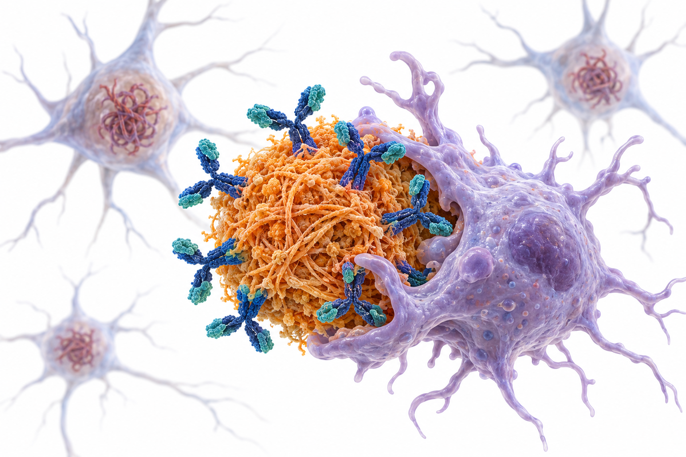
第四章是失智症。
先建立 AD 的生物學定義，再講兩個世代的藥物：症狀治療與抗類澱粉抗體。
14 項可改變危險因子，約佔 45%
Lancet 2024 委員會：生命歷程觀點——早年教育、中年血管與感官、晚年社會與環境
早年
教育程度低
中年（11 項）
聽力損失、LDL 膽固醇過高（新）、憂鬱、頭部外傷、缺乏運動、糖尿病、吸菸、高血壓、肥胖、過量飲酒
晚年
社會孤立、空氣汙染、視力損失（新）
14 項合計的人口可歸因分率（觀察性推估的理論上限）
藥理學的連結
高血壓、糖尿病、高 LDL 都可以用藥物處理——預防本身就是神經藥理學
出處：Livingston G, et al. Lancet 2024;404:572–628. PMID 39096926
Lancet 二〇二四委員會把可改變危險因子從十二項增加到十四項。
早年是教育。
中年最多，新增高 LDL 膽固醇。
晚年新增未矯正的視力損失。
合計人口可歸因分率約百分之四十五，這是觀察性資料推估的理論上限。
高血壓、糖尿病、高 LDL 都可以用藥物處理。
AD：類澱粉在前、tau 在後
Aβ 由 APP 經 β、γ 分泌酶切出並聚集；隨後 tau 過度磷酸化擴散，突觸與神經元流失才出現症狀
APP
β、γ 分泌酶切割
Aβ42
單體 → 寡聚體
原纖維、斑塊
類澱粉 PET 陽性
Tau 擴散
過度磷酸化、糾結
神經元流失
萎縮、症狀
| 作用位置 | 藥物 | 狀態 |
|---|---|---|
| Aβ 原纖維與斑塊 | lecanemab、donanemab | 已上市（台灣自費） |
| Tau | 抗 tau 抗體、反義寡核苷酸 | 臨床試驗中 |
| 殘存神經傳遞 | donepezil、rivastigmine、galantamine、memantine | 症狀治療；健保給付 |
出處：Jack CR Jr, et al. Alzheimers Dement 2024;20:5143–5169. PMID 38934362｜Cummings J, et al. 2025. PMID 40463637
AD 的生物學順序：類澱粉先異常，接著 tau 擴散，最後神經退化帶來症狀。
APP 被切出 Aβ42，聚集成寡聚體、原纖維、斑塊；之後 tau 擴散，神經元流失。
藥物作用點也依這個順序：抗類澱粉抗體在最上游，tau 標靶仍在試驗，症狀治療作用在殘存的神經傳遞。
AA 2024：用生物標記定義 AD
AD 是生物學過程，從無症狀期的神經病理變化開始；Core 1 異常即可診斷，Core 2 提供預後資訊
| 類別 | 生物標記 | 用途 |
|---|---|---|
| Core 1（早期） | 類澱粉 PET；核准的 CSF 標記；準確的血漿標記（尤其 p-tau217） | 異常即足以診斷 AD，支持臨床決策 |
| Core 2（晚期） | 生物體液標記；tau PET | 預後資訊；增加 AD 造成症狀的信心 |
| 非特異性 | 神經退化（MRI、FDG-PET、NfL）、發炎（GFAP） | 嚴重度與鑑別，不用於診斷 AD |
出處：Jack CR Jr, et al. Alzheimers Dement 2024;20:5143–5169. PMID 38934362
AA 二〇二四年的核心：AD 是從無症狀期就開始的生物學過程。
Core 1 包括類澱粉 PET、核准的腦脊髓液標記與準確的血漿標記，尤其 p-tau217，異常一項就足以診斷。
Core 2 包括 tau PET，提供預後。
神經退化與發炎標記不用於診斷 AD。
作者也強調，這不是臨床流程指引。
血液生物標記：兩個準確度門檻
AA 2025 臨床實務指引：限記憶專科、已有客觀認知障礙者；血液檢測是完整評估的一部分，不是取代
對象
客觀認知障礙（MCI 或失智）；疑似 AD
檢測
血漿 p-tau217 等：%p-tau217、p-tau181、Aβ42/40
分流（triage）
敏感度 ≥ 90%、特異度 ≥ 75%
確認（取代 PET／CSF）
敏感度 ≥ 90%、特異度 ≥ 90%
指引的警語
檢測準確度差異很大，許多市售檢測（尤其單一切點）達不到這兩個門檻。
判讀原則（教學推論）
陰性分流結果用來排除；陽性若未達確認門檻，仍需 PET 或 CSF。
出處：Palmqvist S, et al. Alzheimers Dement 2025;21:e70535. PMID 40729527（CC BY）
Palmqvist 二〇二五是 AA 第一份血液生物標記臨床實務指引。
對象限記憶專科、已有客觀認知障礙者，不是無症狀篩檢。
敏感度九成、特異度七成五，可以做分流。
兩者都九成，才能取代類澱粉 PET 或腦脊髓液。
許多市售檢測達不到這兩個門檻。
陰性用來排除，陽性若未達確認門檻，仍需要 PET 或腦脊髓液。
膽鹼突觸：三種 ChEI 的作用點
Meynert 基底核的膽鹼神經元在 AD 早期流失；ChEI 抑制乙醯膽鹼分解，放大殘存的訊號
膽鹼＋乙醯輔酶 A
ChAT 合成
ACh 囊泡
釋放到突觸間隙
AChE／BuChE
分解成膽鹼＋醋酸
受體
蕈毒鹼、菸鹼
Donepezil
選擇性、可逆 AChE 抑制
Rivastigmine
AChE＋BuChE 假性不可逆抑制
Galantamine
AChE 抑制＋菸鹼受體別構調節
出處：Birks JS, Harvey RJ. Cochrane Database Syst Rev 2018;6:CD001190. PMID 29923184
ChEI 的共同機轉是抑制乙醯膽鹼的分解。
乙醯膽鹼被合成、釋放，再被膽鹼酯酶分解；抑制這一步，殘存的訊號就在突觸停留更久。
donepezil 選擇性抑制 AChE，rivastigmine 同時抑制 BuChE，galantamine 另有菸鹼受體別構調節。
副作用來自周邊膽鹼作用，心搏過慢與暈厥在老年人最危險。
三種 ChEI 的實務比較
療效相近，差別在劑型、代謝途徑與耐受性；吞嚥困難或腸胃副作用明顯時可換劑型
| Donepezil | Rivastigmine | Galantamine | |
|---|---|---|---|
| 劑型 | 錠劑（每日一次） | 膠囊、口服液、貼片 | 錠劑、緩釋膠囊 |
| 代謝 | 肝臟 CYP2D6、3A4 | 膽鹼酯酶水解，幾乎不經 CYP | 肝臟 CYP2D6、3A4 |
| 健保適應症 | AD 輕度至重度 | AD 輕中度；PDD（口服） | AD 輕中度 |
| 換藥 | 三個月內因副作用可換同類另一種（健保） | ||
出處：Birks 2018 PMID 29923184｜各藥品仿單｜健保藥品給付規定 1.3.3（114/10/1 修訂；查核 2026-09-25）
三種 ChEI 療效相近，實務差別在這裡。
rivastigmine 有貼片，腸胃副作用較少，也適合吞嚥困難者。
rivastigmine 幾乎不經 CYP 代謝，交互作用較少。
健保適應症不同；三個月內因副作用可以換同類另一種。
Cochrane：donepezil 有效，但幅度小。
Memantine：只擋病理性雜訊
中等親和力、非競爭性、電位依賴：持續微量的麩胺酸被擋下，強的生理性訊號仍能通過
靜止
Mg²⁺ 塞住 NMDA 通道
病理性持續刺激
Mg²⁺ 脫離 → Ca²⁺ 慢性流入
加上 memantine
佔據通道 → 雜訊被擋
生理性強刺激
強去極化使 memantine 快速脫離
| 族群（Cochrane 2019） | 結果 |
|---|---|
| 中重度 AD（約 3,700 人） | SIB +3.11、ADL +1.09、NPI +1.84：小但一致的效益 |
| 輕度 AD（MMSE 20–23） | 認知、ADL、行為與安慰劑無差異 |
| 激動症狀 | CMAI 差 0.50（95% CI −3.71 至 4.71）：不能拿來治療激動 |
出處：McShane R, et al. Cochrane Database Syst Rev 2019;3:CD003154. PMID 30891742
memantine 的妙處在電位依賴與快速解離。
靜止時鎂離子塞住通道。
AD 腦中持續微量的麩胺酸讓鎂塞子脫離，鈣離子慢性流入。
memantine 佔據通道，擋住這種雜訊。
真正的學習訊號造成強去極化時，memantine 很快離開。
Cochrane：中重度有小而一致的效益；輕度無效；也不能治療激動。
效果量：顯著不等於看得出來
各量表範圍不同；用「量表總分的幾分之幾」與「病人看得出的改變」來思考
| 藥物與比較 | 量表（範圍） | 差距 | 時間 |
|---|---|---|---|
| Donepezil 10 mg vs 安慰劑 | ADAS-Cog（0–70） | −2.67 | 26 週 |
| Donepezil 10 mg vs 安慰劑 | MMSE（0–30） | +1.05 | 26 週 |
| Memantine vs 安慰劑（中重度） | SIB（0–100） | +3.11 | 6–7 個月 |
| Lecanemab vs 安慰劑 | CDR-SB（0–18） | −0.45 | 18 個月 |
| Donanemab（低／中 tau） | CDR-SB（0–18） | −0.67 | 76 週 |
出處：Birks 2018 PMID 29923184｜McShane 2019 PMID 30891742｜van Dyck 2023 PMID 36449413｜Sims 2023 PMID 37459141
把兩個世代的藥放在同一張表上。
donepezil 在 ADAS-Cog 差二點六七分，MMSE 差一分。
memantine 在 SIB 差三分，量表滿分一百。
抗類澱粉抗體在 CDR-SB 差零點四五與零點六七分，量表滿分十八。
兩者的效果性質不同；多大的差距具臨床意義，目前仍有爭議。
台灣健保：依嚴重度分三段
限 AD 或 PDD；初次使用需影像或 Hachinski、血液檢查與 MMSE／CDR；血管性失智與嚴重傳導阻滯不建議
| 嚴重度 | MMSE／CDR | 給付藥物 | 備註 |
|---|---|---|---|
| 輕度至中度 AD | MMSE 10–26 或 CDR 1–2 | donepezil、rivastigmine、galantamine | 神經科或精神科 |
| 中重度 AD | 10 ≦ MMSE ≦ 14 或 CDR 2 | memantine；可由 ChEI 換用或併用 | 神經科或精神科 |
| 重度 AD | MMSE 5–9 且 CDR 3 | donepezil、memantine 或兩者併用 | 臥床、無行動能力者不得使用 |
| PDD | MMSE 10–26 或 CDR 1–2 | rivastigmine 口服 | 限神經科；PD 診斷 ≥ 1 年後 |
出處：健保藥品給付規定 1.3.3（114/10/1 修訂；查核 2026-09-25）
健保給付依嚴重度分三段。
輕度到中度，MMSE 十到二十六，三種 ChEI。
memantine 分兩段：中重度十到十四分，重度五到九分且 CDR 三，重度時可以與 donepezil 併用。
帕金森病失智限 rivastigmine 口服。
每年重評，退步就停用；抗類澱粉抗體目前不給付。
抗類澱粉抗體：各自抓哪一種 Aβ
Aβ 由單體聚集成寡聚體、原纖維，最後沉積成斑塊；結合的物種不同，清除速度與 ARIA 風險也不同
單體
寡聚體
原纖維
lecanemab
斑塊
donanemab（N3pG）
共同清除路徑
抗體 Fc 端招募小膠質細胞吞噬；血管壁上的類澱粉也受波及——這是 ARIA 的來源
給藥差異
lecanemab 每 2 週靜脈；donanemab 每 4 週，類澱粉清除後可停藥
AI 生成示意 Y 形抗體結合斑塊，小膠質細胞吞噬清除
出處：van Dyck CH 2023 PMID 36449413｜Sims JR 2023 PMID 37459141｜Cummings J 2025 PMID 40463637（Fc 介導清除為一般抗體藥理學描述）
Aβ 的聚集是一個連續譜。
lecanemab 主要結合可溶性原纖維；donanemab 結合斑塊中 N 端焦麩胺酸化的 Aβ。
兩者都靠 Fc 端招募小膠質細胞清除；血管壁上的類澱粉被清除時，就造成 ARIA。
給藥頻率也不同，donanemab 清完可以停藥。
抗類澱粉抗體：差在標的與 ARIA
效果量相近；都收早期 AD 且有類澱粉證據者，不可跨試驗直接比大小
| Lecanemab（Clarity AD） | Donanemab（TRAILBLAZER-ALZ 2） | |
|---|---|---|
| 受試者 | 早期 AD，n = 1,795 | 早期症狀性 AD，n = 1,736（依 tau 分層） |
| 結合的 Aβ | 可溶性 protofibril | 斑塊中 N 端焦麩胺酸化 Aβ（N3pG） |
| 給藥 | 10 mg/kg 靜脈，每 2 週；18 個月 | 靜脈每 4 週；類澱粉清除後可停藥；76 週 |
| CDR-SB | 1.21 vs 1.66 差 −0.45（95% CI −0.67 至 −0.23） | 1.20 vs 1.88（低／中 tau） 差 −0.67（95% CI −0.95 至 −0.40） |
| ARIA-E／輸注反應 | 12.6%／26.4% | 24.0%（安慰劑 2.1%）／8.7% |
出處：van Dyck CH, et al. N Engl J Med 2023;388:9–21. PMID 36449413｜Sims JR, et al. JAMA 2023;330:512–527. PMID 37459141
兩支抗體都能降低類澱粉並減緩臨床惡化，但標的不同。
Lecanemab 抓可溶性的 protofibril；donanemab 抓斑塊裡 N 端被焦麩胺酸化的 Aβ，所以清完可以停藥。
CDR-SB 的絕對差距是 0.45 與 0.67 分，請同學思考這在臨床上代表什麼；ARIA-E 則是 donanemab 約為兩倍。
左邊是 Clarity AD、右邊是 TRAILBLAZER-ALZ 2 的原文曲線：兩條線都是逐漸拉開，代表減緩的是惡化斜率，不是把分數拉回來。
ARIA：清除血管壁類澱粉的代價
ARIA-E（水腫／積液）與 ARIA-H（微出血／表層鐵沉積）；多發生在前三次輸注，APOE ε4 愈多風險愈高
Donanemab 安慰劑對照試驗（合併 3,030 人）
獨立危險因子
APOE ε4 對偶基因數、基線微出血數、表層鐵沉積、類澱粉量、平均動脈壓；使用降壓藥風險較低
時間與嚴重度
58.3% 在第 3 次輸注前出現；症狀性 5.8%、嚴重 1.5%
出處：Zimmer JA, et al. JAMA Neurol 2025;82:461–469. PMID 40063015｜Wang H, et al. J Prev Alzheimers Dis 2025. PMID 40619285
ARIA 是血管壁類澱粉被清除時的代價。
Zimmer 二〇二五合併三千多人：donanemab ARIA-E 百分之二十四，ARIA-H 三十一，安慰劑分別二與十三。
危險因子包括 APOE ε4 數目、基線微出血、表層鐵沉積、類澱粉量與血壓。
近六成在第三次輸注前出現，多數輕中度。
改良滴定可以把 ARIA-E 降到一成五左右。
用藥前：資格、溝通與 MRI 監測
Appropriate Use Recommendations 緊貼試驗的納入排除條件；機構要先準備好處理嚴重事件的流程
1
確認早期 AD
MCI 或輕度失智
2
確認類澱粉
PET、CSF 或達標血液檢測
3
APOE 基因型
ε4 同型合子風險最高
4
基線 MRI
微出血、表層鐵沉積
5
輸注＋定期 MRI
早期幾次輸注前追蹤
AUR 建議暫不使用
需要抗凝治療者（出血風險）；不符合試驗族群者效果未知
溝通重點
效益是減緩惡化，風險是 ARIA，需要規律輸注與 MRI
出處：Cummings J, et al. J Prev Alzheimers Dis 2023;10:362–377. PMID 37357276｜Zimmer 2025 PMID 40063015（MRI 時點依各藥仿單）
使用抗類澱粉抗體前的五個步驟。
確認是早期 AD，並以 PET、腦脊髓液或達標血液檢測確認類澱粉。
建議做 APOE 基因型做風險溝通，並有基線 MRI。
輸注期間，尤其前幾個月，要定期追蹤 MRI。
需要抗凝的人，AUR 建議暫不使用。
溝通時要說清楚：效益是減緩，風險是 ARIA。
2025–2026 的四個進展
給藥更方便、ARIA 更少、失敗也是答案；管線仍以疾病標靶治療為主
| 進展 | 內容 |
|---|---|
| Lecanemab 皮下劑型 | 靜脈起始後可改皮下維持（250 mg 每週），或皮下起始 500 mg 每週（模型設定；核准劑量以仿單為準） |
| Donanemab 改良滴定 | TRAILBLAZER-ALZ 6：ARIA-E 24.2% → 15.6%，類澱粉清除相當 |
| Semaglutide（evoke、evoke+） | 兩年 14 mg 口服：無臨床效益；CRP 下降、CSF 發炎標記小幅下降 |
| 2025 年藥物管線 | 138 個藥物、182 個試驗；小分子疾病標靶 43%、生物製劑 30%、認知增強 14%、神經精神 11%；老藥新用 33% |
出處：Wang H 2025 PMID 40172303｜Ressa 2026 PMID 41488982｜Cummings J 2026 PMID 42785112｜Cummings J 2025 PMID 40463637
二〇二五到二〇二六年的四個進展。
lecanemab 有皮下劑型，實際劑量以仿單為準。
donanemab 改良滴定讓 ARIA-E 降到一成五。
semaglutide 在早期 AD 兩年沒有臨床效益，這是最重要的陰性結果。
管線有一百三十八個藥物，三分之一是老藥新用。
觀察性關聯不等於試驗證實。
案例：MCI、p-tau217 陽性、服抗凝
72 歲，MMSE 25、CDR 0.5；家屬希望「有藥就用」；因心房顫動正在服用 apixaban
出處：Palmqvist 2025 PMID 40729527｜Cummings 2023 PMID 37357276｜健保藥品給付規定 1.3.3（114/10/1 修訂）
案例：輕度認知障礙、血液 p-tau217 陽性，同時在吃 apixaban。
直接開抗體有兩個問題：血液檢測要達確認門檻，而且需要抗凝的人暫不建議使用。
停掉抗凝是本末倒置。
比較好的做法是確認診斷、健保 ChEI、控制危險因子，十二個月後重評。
如果沒有抗凝需求，才可以討論抗體，並先做 APOE 與基線 MRI。
BPSD：先找原因，再決定用藥
激動、精神病症狀、憂鬱、睡眠障礙常有可逆原因；非藥物介入是第一線，用藥後也不停止
1
描述行為
什麼、何時、多頻繁、誰困擾
2
找原因
疼痛、譫妄、感染、便秘、藥物
3
非藥物介入
環境、照顧技巧、作息
4
高風險才用藥
最低劑量、最短期間
5
定期重評
有效者 4 個月內嘗試減量
最常被漏掉的原因
疼痛、便秘、尿滯留、譫妄、新加的抗膽鹼或鎮靜藥物
非藥物介入
規律作息與日間活動、減少過度刺激、照顧溝通技巧、照顧者支持
出處：Cheng CM, et al. J Chin Med Assoc 2026;89:187–197. PMID 41527161｜Lee D 2023 PMID 37930669
BPSD 的處理有五步。
先具體描述行為。
再找原因：疼痛、便秘、尿滯留、譫妄、新加的藥物最常被漏掉。
非藥物介入是第一線。
高風險時才用藥，最低劑量、最短期間。
台灣共識建議有效者四個月內嘗試減量；藥物是增量，不是替代品。
BPSD 藥物：效果小，安全性決定選擇
抗精神病藥有增加死亡的黑框警語；每個選項都要與照顧者討論目標與停藥條件
| 藥物 | 機轉 | 證據 | 代價 |
|---|---|---|---|
| Brexpiprazole 2–3 mg | D2 與 5-HT1A 部分促效、5-HT2A 拮抗 | CMAI −22.6 vs −17.3（差 −5.32） | 抗精神病藥黑框警語 |
| Citalopram（CitAD） | SSRI | CGIC 中度以上改善 40% vs 26% | QT 延長 18.1 ms；認知 −1.05 |
| Memantine | NMDA 拮抗 | 激動無效（CMAI 差 0.50） | — |
| Trazodone、褪黑激素 | 睡眠為主 | 本頁未引用試驗數字 | 跌倒、日間嗜睡 |
出處：Lee D, et al. JAMA Neurol 2023;80:1307–1316. PMID 37930669｜Porsteinsson AP, et al. JAMA 2014;311:682–691. PMID 24549548｜McShane 2019 PMID 30891742
BPSD 的藥物選擇。
brexpiprazole 十二週 CMAI 下降二十二點六對十七點三，差五點三。
citalopram 在心理社會介入之上，改善比例四成對兩成六，但 QT 延長、認知下降約一分。
memantine 不能治療激動；trazodone 與褪黑激素以睡眠為主，要注意跌倒。
效果都不大，要搭配非藥物與定期重評。
案例：夜間激動，家屬要求鎮靜
84 歲中度 AD，近一週夜間吵鬧、拉扯尿布；三天未解便；上週因頻尿加開 oxybutynin
出處：Cheng CM 2026 PMID 41527161｜Coupland CAC 2019 PMID 31233095｜McShane 2019 PMID 30891742
案例：中度 AD，最近夜間激動，三天沒解便，上週加了 oxybutynin。
直接加抗精神病藥，是跳過了找原因。
先處理便秘、停掉 oxybutynin、評估疼痛與尿滯留；oxybutynin 是強抗膽鹼藥，會抵消 ChEI。
memantine 加量對激動沒有效。
這就是處方瀑布。
非 AD 失智：藥理反應差很多
路易氏體、帕金森、血管性、額顳葉失智對藥物的反應與風險截然不同
| 類型 | 病理與特徵 | 藥理重點 |
|---|---|---|
| 路易氏體失智（DLB） | α-syn；RBD、MIBG 心肌掃描權重提高 | 膽鹼缺損明顯，ChEI 常有效；對抗精神病藥極敏感 |
| 帕金森病失智（PDD） | PD 至少一年後出現失智 | 健保：rivastigmine 口服（神經科） |
| 血管性失智（VaD） | 腦血管病變 | 健保不建議 ChEI／memantine；控制血管危險因子 |
| 額顳葉失智（FTD） | tau 或 TDP-43 | 無證實有效的認知藥物；以行為症狀處置為主 |
出處：McKeith IG, et al. Neurology 2017;89:88–100. PMID 28592453（CC BY）｜健保藥品給付規定 1.3.3
非 AD 失智的藥理反應差很多。
路易氏體失智膽鹼缺損比 AD 更嚴重，ChEI 常有明顯效果，但對抗精神病藥非常敏感。
帕金森病失智，健保給付 rivastigmine 口服。
血管性失智健保不建議失智藥物；額顳葉失智沒有證實有效的認知藥物。
DLB 先想到 ChEI。
傷害認知的藥物：抗膽鹼負荷
英國巢式病例對照（失智 58,769、對照 225,574）：強抗膽鹼藥累積暴露與失智呈劑量相關
累積暴露與失智的關聯（調整後 OR；觀察性）
處方瀑布
ChEI → 尿失禁 → 加抗膽鹼膀胱藥 → 認知更差：兩藥作用互相抵消
人口可歸因分率
約 10.3% 的失智與抗膽鹼藥物暴露相關（觀察性推估，只能說相關）
出處：Coupland CAC, et al. JAMA Intern Med 2019;179:1084–1093. PMID 31233095
Coupland 二〇一九的巢式病例對照研究。
累積暴露愈高，調整後勝算比從一點零六升到一點四九；抗膽鹼抗憂鬱劑與抗巴金森藥都有關聯。
臨床重點是處方瀑布：ChEI 引起尿失禁，加上抗膽鹼膀胱藥，兩者互相抵消。
這是觀察性研究，只能說相關。
US POINTER：結構化介入多一點點
2,111 位高風險長者、兩年；兩組都改善，結構化組每年多 0.029 SD——效果小但方向一致
整體認知 z 分數的年增率（SD／年）
差距（95% CI 0.008–0.050），P = 0.008
介入內容
身體與認知活動、健康飲食、社交參與、心血管健康監測；差在結構、強度與督促
出處：Baker LD, et al. JAMA 2025;334:681–691. PMID 40720610｜Livingston 2024 PMID 39096926
US POINTER 比較兩種兩年的生活介入。
兩組認知分數都上升，結構化組每年多零點零二九個標準差。
差距小但顯著。
內容相同，差在結構、強度與督促。
沒有安慰劑組，比較時要注意設計差異。
晚期失智：停藥也是治療
目標從「延緩退化」轉為「舒適與功能」；每一個藥都要重新問：還有幫助嗎？
| 藥物 | 考慮停藥或減量的時機 |
|---|---|
| ChEI、memantine | 健保：MMSE 下降超過 2 分或 CDR 退步 1 級；重度者臥床或無行動能力不給付 |
| 抗精神病藥 | BPSD 改善後 4 個月內嘗試減量；減量中與停藥後每月重評 |
| 抗膽鹼藥物 | 優先替換（膀胱藥、第一代抗組織胺、三環抗憂鬱劑） |
| 預防性用藥 | statin、降血糖藥的目標依餘命與照護目標重新設定 |
出處：健保藥品給付規定 1.3.3｜Coupland 2019 PMID 31233095｜Cheng CM 2026 PMID 41527161（預防性用藥為一般老年醫學原則）
晚期失智的藥物重整。
失智藥物依健保停藥門檻。
抗精神病藥在改善後四個月內嘗試減量。
抗膽鹼藥物優先替換。
預防性用藥的目標依餘命重新設定。
去處方要事先與家屬溝通。
失智症小結：五件要帶走的事
生物學定義、兩代藥物、健保與安全
1
生物學定義
Core 1（含 p-tau217）即可診斷；血液 90/75、90/90
2
症狀治療
ChEI 增加 ACh；memantine 擋 NMDA 雜訊
3
健保
ChEI 10–26；memantine 10–14（重度 5–9 且 CDR 3）
4
抗類澱粉抗體
CDR-SB 差 0.45–0.67；ARIA、ε4、抗凝是限制
5
BPSD 與去處方
先找原因；抗膽鹼負荷抵消 ChEI
出處：Jack 2024 PMID 38934362｜Palmqvist 2025 PMID 40729527｜Zimmer 2025 PMID 40063015｜健保藥品給付規定 1.3.3
失智症段落的小結。
生物學定義、症狀治療、健保門檻、抗類澱粉抗體的效益與限制、BPSD 與去處方。
最後一章是帕金森氏症。
05
帕金森氏症
PARKINSON'S DISEASE
- 1臨床診斷與 α-synuclein 生物學定義
- 2基底核迴路與多巴胺突觸：七類藥物
- 3左多巴藥動學、治療窗與運動併發症
- 4起始治療、OFF 期輔助、裝置輔助療法
- 5非運動症狀、藥物誘發巴金森症、疾病修飾嘗試
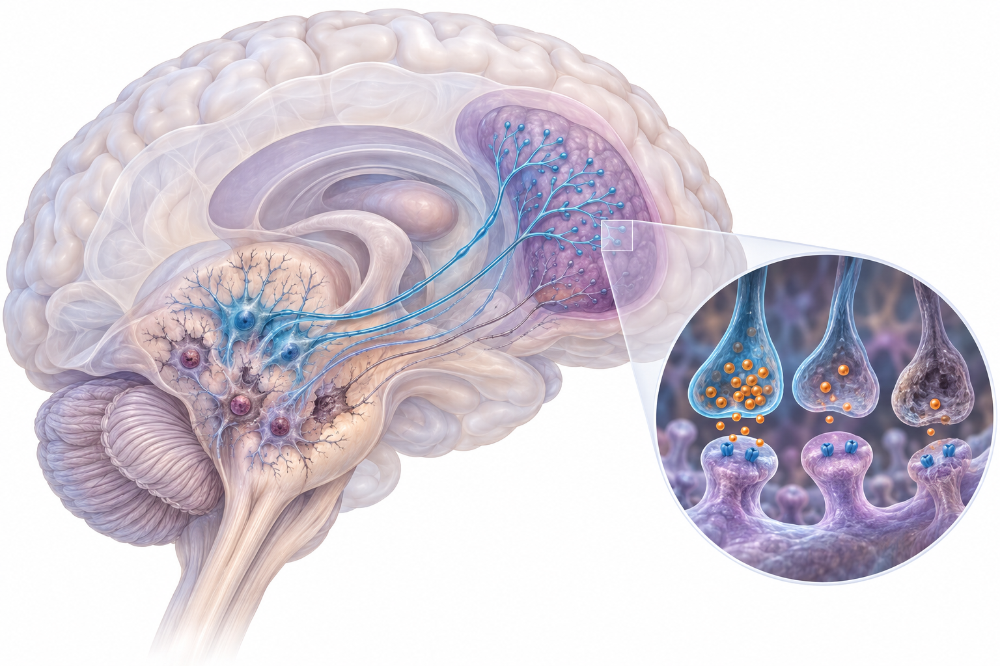
最後一章是帕金森氏症。
重點在基底核迴路與左多巴藥動學，這兩張圖解釋了幾乎所有的臨床用藥決策。
MDS 診斷：先確定巴金森症
核心：動作遲緩＋靜止型顫抖或僵硬；再用排除條件、紅旗與支持條件決定確定度
1
巴金森症
動作遲緩＋靜止型顫抖或僵硬
2
絕對排除
任何一項 → 不是 PD
3
紅旗
需以支持條件抵銷
4
支持條件
例如對多巴胺治療反應明顯
5
確定度
臨床確定或可能 PD
臨床確定 PD
犧牲敏感度換取最高特異度：適合研究收案
前驅期
RBD、嗅覺減退、便秘等非運動表現另有前驅期 PD 準則
出處：Postuma RB, et al. Mov Disord 2015;30:1591–1601. PMID 26474316
MDS 二〇一五準則把診斷分兩步。
先確定有巴金森症。
再看絕對排除條件與紅旗。
支持條件可以抵銷紅旗，最後決定確定度。
臨床確定追求特異度；前驅期另有準則。
對多巴胺治療反應明顯，本身就是支持條件。
從症候群到生物學定義
CSF 種子擴增檢測能在活體偵測病理性 α-synuclein；2024 年兩套研究用框架把 PD 重新定義為生物學疾病
| NSD-ISS 分期 | 定義 |
|---|---|
| 第 0 期 | SNCA 致病變異 |
| 第 1A／1B 期 | S（病理性 α-syn）；1B 另有 D（多巴胺功能異常）；皆無症狀 |
| 第 2 期 | 輕微徵象或症狀，無功能障礙 |
| 第 2B–6 期 | 需同時有 S 與 D，功能障礙逐步增加 |
SynNeurGe
S：病理性 α-syn｜N：神經退化影像｜G：致病基因｜C：臨床特徵
目前限研究使用
尚未取代臨床診斷；意義在於疾病修飾治療未來可能在無症狀期介入
出處：Simuni T, et al. Lancet Neurol 2024;23:178–190. PMID 38267190｜Höglinger GU, et al. Lancet Neurol 2024;23:191–204. PMID 38267191
二〇二四年有兩套生物學框架。
NSD-ISS 以 S 與 D 兩個錨點，再依功能障礙分期。
SynNeurGe 是 S、N、G 三個成分加臨床成分。
兩者都限研究使用，但未來可能讓疾病修飾治療在無症狀期介入。
基底核迴路：踩不下油門
D1 直接路徑促進動作、D2 間接路徑抑制動作；多巴胺流失使兩者失衡，GPi 過度抑制視丘
大腦皮質
麩胺酸 → 紋狀體
紋狀體
D1 直接｜D2 間接
黑質緻密部
多巴胺神經元流失
直接路徑（D1）變弱
紋狀體 → GPi 的抑制減少 → GPi 輸出增加
間接路徑（D2）變強
紋狀體 → GPe 抑制增加 → STN 去抑制、過度活化 → 興奮 GPi
GPi／SNr 輸出 ↑
抑制增強
視丘被抑制
動作慢
出處：DeLong MR, Wichmann T. Arch Neurol 2007;64:20–24. PMID 17210805
經典的速率模型。
皮質送訊號到紋狀體，黑質的多巴胺調節兩條路徑。
多巴胺流失時，D1 直接路徑變弱，對 GPi 的抑制減少。
D2 間接路徑變強，視丘下核過度活化，進一步興奮 GPi。
結果 GPi 過度抑制視丘，動作變慢。
深部腦刺激的標靶就在這條迴路上。
多巴胺突觸：七類藥物作用點
左多巴補的是原料；其他藥物讓多巴胺活得更久、作用更強，或調整下游的非多巴胺系統
DDC 抑制
減少周邊多巴胺：噁心、低血壓
carbidopa、benserazide
COMT 抑制
減少轉成 3-OMD
entacapone、opicapone
MAO-B 抑制
減少腦內多巴胺分解
rasagiline、safinamide
多巴胺促效
D2/D3（tavapadon：D1/D5）
pramipexole、ropinirole、rotigotine
NMDA 拮抗
減少異動症
amantadine
A2A 拮抗
間接路徑
istradefylline
抗膽鹼（M1）
老年易認知與排尿問題
trihexyphenidyl
出處：Fox SH, et al. Mov Disord 2018;33:1248–1266. PMID 29570866｜Taiwan Consensus. Acta Neurol Taiwan 2023;32:145–184. PMID 37674429
從周邊往腦內讀。
口服左多巴在周邊被 DDC 轉成多巴胺，造成噁心與低血壓，所以一定要併用 carbidopa 或 benserazide。
COMT 抑制劑減少轉成 3-OMD；MAO-B 抑制劑減少腦內分解。
左多巴進腦後轉成多巴胺；促效劑直接作用在受體，tavapadon 是 D1/D5 部分促效劑。
amantadine 以 NMDA 拮抗減少異動症；istradefylline 拮抗 A2A；抗膽鹼藥在老年人容易造成認知問題。
左多巴：治療窗隨病程變窄
病程愈久，ON 所需濃度上升、異動症閾值下降；一天之中療效完全跟著血中濃度起伏
病程：治療窗（深色）逐年變窄（示意）
輕度（0 年）
中度（約 4 年）
重度（> 10 年）
一天之中（每次服藥後的濃度起伏）
清晨 OFF、延遲 ON
夜間無藥；胃排空慢、蛋白質競爭吸收
高峰期異動症
濃度衝過異動症閾值
劑末藥效減退、部分 ON
下一劑前掉到 ON 閾值以下
劑量失效
這一劑沒有吸收到有效濃度
出處：Teymourian H, et al. Nat Rev Neurol 2022;18:497–507. PMID 35681103｜Fox SH, et al. Mov Disord 2018. PMID 29570866（左側為依原文概念重繪之示意，非實測）
這是整段最重要的概念圖。
左邊是病程：早期治療窗很寬；隨著病程進展，要達到 ON 的濃度愈來愈高，異動症的門檻愈來愈低，十年後只剩一條窄縫。
右邊是一天：清晨沒有藥是 OFF，第一劑可能延遲起效；濃度衝太高就是異動症。
下一劑前掉到門檻以下就是藥效減退；有時一整劑都沒吸收好，就是劑量失效。
這是原文的圖，上半是病程，下半是一天的血中濃度。後面的新劑型，都是為了讓這條曲線變平。
早期起始：左多巴、促效劑或 MAO-B
AAN 2021：左多巴運動療效較佳、異動症較多；促效劑衝動控制障礙較多；各劑型之間差異不大
| 左多巴 | 多巴胺促效劑 | MAO-B 抑制劑 | |
|---|---|---|---|
| 運動療效 | 最佳 | 中等 | 較小 |
| 異動症 | 較多 | 較少 | 少 |
| 衝動控制障礙 | 較少 | 較多 | 少 |
| 其他 | 噁心、姿勢性低血壓 | 嗜睡、突然入睡、水腫、幻覺 | 與 SSRI 併用需注意 |
| 健保 1.3.4 | — | 可在 levodopa 前或同時使用一種 | rasagiline 單用 ≤ 1 mg／日 |
出處：Pringsheim T, et al. Neurology 2021;97:942–957. PMID 34782410｜Fox 2018 PMID 29570866｜健保 1.3.4（查核 2026-09-25）
早期起始有三種選擇。
左多巴運動療效最好。
但異動症較多；促效劑的衝動控制障礙風險較高。
各有副作用與健保限制。
選擇依病人：功能受損明顯者不必延後左多巴。
LEAP：左多巴不傷神經，也不修飾
延後起始設計（n = 445）：早期起始組 80 週與延後起始組相同——沒有疾病修飾，也沒有加速惡化
80 週 UPDRS 總分變化（改善幅度）
差距 1.0 點（95% CI −1.5 至 3.5），P = 0.44
延後起始設計
一組先用左多巴 80 週；另一組先 40 週安慰劑再 40 週左多巴——終點相同代表沒有疾病修飾
臨床意義
不必為了「保護神經」延後左多巴；何時開始依症狀與功能決定
出處：Verschuur CVM, et al. N Engl J Med 2019;380:315–324. PMID 30673543
LEAP 回答「左多巴會不會加速惡化」。
八十週時兩組 UPDRS 變化沒有差異。
延後起始設計：終點相同，就代表沒有疾病修飾效果。
所以不必為了保護神經而延後左多巴。
新方向：tavapadon（D1/D5）
傳統促效劑作用 D2/D3；tavapadon 選擇性作用直接路徑的 D1/D5 受體，2026 年發表三個第三期試驗
| 試驗 | 族群 | 主要結果 |
|---|---|---|
| TEMPO-1（n = 529） | 早期 PD；5 或 15 mg 固定劑量 | MDS-UPDRS II+III 差 −11.5／−12.1 點（26 週） |
| TEMPO-2（n = 304） | 早期 PD；5–15 mg 彈性劑量 | 顯著改善；停藥 38% vs 15%（副作用 24% vs 4%） |
| TEMPO-3（n = 507） | 運動波動，加在左多巴之上 | 良好 ON 時間 +1.10 小時 |
出處：Pahwa R 2026 JAMA Neurol PMID 41860533｜Fernandez HH 2026 JAMA Neurol PMID 41860544｜Fernandez HH 2026 Lancet Neurol PMID 42456682
tavapadon 選擇 D1/D5，理論上直接活化直接路徑。
TEMPO-1 固定劑量二十六週差十一到十二點。
TEMPO-2 有效，但停藥率三成八對一成五。
TEMPO-3 在波動期增加一點一小時的良好 ON 時間。
台灣上市狀態請依藥事資料確認。
運動併發症：減退與異動的對策
非生理性的脈衝式多巴胺刺激，加上突觸前緩衝消失，讓療效跟著血中濃度起伏
| 類型 | 發生時點 | 藥理對策 |
|---|---|---|
| 藥效減退 | 下一劑前 | 縮短間隔、加 COMT 或 MAO-B 抑制劑、長效劑型、促效劑 |
| 不可預期 ON-OFF | 與服藥無固定關係 | 連續給藥：皮下輸注、腸道凝膠、DBS |
| 延遲 ON／無 ON | 服藥後遲遲不起效 | 空腹服用、避開蛋白質、繞過胃的劑型 |
| 高峰期異動症 | 血中濃度最高時 | 單次劑量減少、amantadine、連續給藥 |
| 雙相異動症 | 起效與消退時 | 較難處理；考慮連續給藥或 DBS |
出處：Fox SH, et al. Mov Disord 2018;33:1248–1266. PMID 29570866｜Pringsheim 2021 PMID 34782410
把治療窗圖對應到臨床型態。
藥效減退是濃度掉到門檻以下；不可預期的 ON-OFF 要靠連續給藥。
延遲 ON 多半是吸收問題。
高峰期異動症是濃度太高，可以減少單次劑量或加 amantadine。
共同原則是讓濃度更平穩。
OFF 期輔助：COMT 抑制劑
BIPARK-1（n = 590）：opicapone 50 mg 每日一次，OFF 時間減少不劣於 entacapone、優於安慰劑
OFF 時間減少（分鐘）
機轉
阻斷周邊 COMT，減少左多巴轉成 3-OMD，讓更多左多巴進腦、作用更久
健保 1.3.4
COMT 抑制劑可與左多巴併用；safinamide 限與左多巴併用於運動波動；三合一製劑限藥效終期波動
出處：Ferreira JJ, et al. Lancet Neurol 2016;15:154–165. PMID 26725544｜健保藥品給付規定 1.3.4（查核 2026-09-25）
COMT 抑制劑延長左多巴的作用。
BIPARK-1：opicapone 五十毫克 OFF 時間減少一百一十七分鐘。
entacapone 九十六分鐘，安慰劑五十六分鐘。
機轉是減少周邊轉成 3-OMD。
opicapone 每日一次，依從性較好；健保也列出 safinamide 與三合一製劑的限制。
繞過胃：左多巴給藥途徑
口服左多巴要過三關：胃排空、小腸吸收（與蛋白質競爭）、周邊代謝；新劑型就是逐一繞過
胃排空
延遲 → 延遲 ON
小腸吸收
與胺基酸競爭
血中
周邊 DDC、COMT
進入腦
跨血腦障壁
| 途徑 | 繞過了什麼 | 例子 |
|---|---|---|
| 腸道凝膠輸注 | 胃排空 | 左多巴-carbidopa 腸道凝膠（PEG-J） |
| 皮下連續輸注 | 胃排空與小腸吸收 | foslevodopa-foscarbidopa；apomorphine |
| 吸入、舌下 | 胃腸道 | 吸入型左多巴、舌下 apomorphine（按需） |
出處：Soileau MJ 2022 PMID 36402160｜Katzenschlager R 2018 PMID 30055903｜Fox 2018 PMID 29570866（apomorphine 是促效劑，不是左多巴）
口服左多巴要過三關。
胃排空、小腸吸收、周邊代謝。
腸道凝膠繞過胃，皮下輸注繞過整個腸胃道，吸入與舌下劑型提供快速救援；apomorphine 本身是強效促效劑。
連續給藥：OFF 再減 1.8–1.9 小時
兩個隨機試驗都在最佳口服治療仍有運動波動的病人；對照組同樣有改善，差距才是療效
每日 OFF 時間減少（小時）
Foslevodopa-foscarbidopa
無麻煩異動症的 ON 時間 +2.72 vs +0.97 小時（差 1.75）
其他選項
左多巴腸道凝膠、深部腦刺激（STN、GPi）；依年齡、認知與病人偏好選擇
出處：Soileau MJ, et al. Lancet Neurol 2022;21:1099–1109. PMID 36402160｜Katzenschlager R, et al. Lancet Neurol 2018;17:749–759. PMID 30055903
裝置輔助療法讓給藥更連續。
foslevodopa 皮下二十四小時輸注，OFF 減少二點七五小時，對照零點九六。
TOLEDO：apomorphine 輸注二點四七對零點五八。
其他選項包括腸道凝膠與深部腦刺激；台灣可取得性與給付請另行確認。
台灣實務：TMDS 2023 與健保
共識以實證醫學為原則並強調個別化；健保條文決定了可用的藥物組合
| 項目 | 健保 1.3.4 規定重點 |
|---|---|
| 起始 | 出現功能障礙時，於左多巴之前或同時使用一種促效劑、或 amantadine、或左多巴＋COMT 抑制劑 |
| Rasagiline | 單獨每日 ≤ 1 mg；併用其他抗巴金森藥 ≤ 0.5 mg |
| Rotigotine 貼片 | 限原發性 PD，每日一片，不得併用其他口服促效劑 |
| Safinamide | 限與左多巴併用於運動波動；每日 1 錠（2 錠需記載理由） |
| 三合一與緩釋左多巴 | 限藥效終期波動；緩釋型限前述治療無效者，每日至多 4 粒 |
出處：Taiwan Consensus. Acta Neurol Taiwan 2023;32:145–184. PMID 37674429｜健保藥品給付規定 1.3.4（查核 2026-09-25）
台灣實務看兩份文件：動作障礙學會共識與健保 1.3.4。
起始時可以在左多巴之前或同時使用一種促效劑。
rasagiline 與 rotigotine 有劑量與併用限制。
safinamide 與三合一製劑限運動波動。
申報前請查最新公告。
非運動症狀：精神病、失智、低血壓
非運動症狀常比運動症狀更影響生活品質；多巴胺藥物本身也可能是原因
| 症狀 | 先檢查 | 藥物 |
|---|---|---|
| 幻覺、妄想 | 減少抗膽鹼、amantadine、促效劑 | pimavanserin（5-HT2A 反向促效）、quetiapine、clozapine |
| 失智（PDD） | 排除譫妄、藥物 | rivastigmine（健保：PD 診斷 ≥ 1 年後，神經科） |
| 姿勢性低血壓 | 減少降壓藥、補充水分 | midodrine、droxidopa、fludrocortisone |
| RBD | 環境安全 | 褪黑激素、clonazepam |
| 便秘 | 飲食、運動 | 軟便劑、滲透性瀉劑 |
出處：Cummings J, et al. Lancet 2014;383:533–540. PMID 24183563｜健保 1.3.3｜Taiwan Consensus 2023 PMID 37674429
非運動症狀常比運動症狀更影響生活。
精神病症狀的第一步是減藥：先減抗膽鹼、amantadine、促效劑，最後才動左多巴；pimavanserin 不阻斷 D2。
失智用 rivastigmine；姿勢性低血壓先減降壓藥。
RBD 先注意環境安全。
典型抗精神病藥會惡化運動症狀。
藥物誘發巴金森症：flunarizine
任何阻斷 D2 或耗竭多巴胺的藥物都可能誘發；最常被忽略的是眩暈與偏頭痛用藥
flunarizine／cinnarizine vs 對照（95% CI 3.76–6.97）
3 年內診斷巴金森症（各 9,830 人，台灣健保資料庫）
顯著危險因子
| 類別 | 代表藥物 |
|---|---|
| 抗精神病藥 | haloperidol、risperidone 等（典型藥最明顯） |
| 止吐、腸胃蠕動藥 | metoclopramide、prochlorperazine |
| 鈣通道阻斷（眩暈、偏頭痛） | flunarizine、cinnarizine |
出處：Lin HL, et al. Eur J Clin Pharmacol 2017;73:365–371. PMID 27986997（觀察性）｜Taiwan Headache Society 2017. PMID 28752512
藥物誘發巴金森症，最常被忽略的是眩暈與偏頭痛用藥。
Lin 二〇一七台灣健保資料：flunarizine 或 cinnarizine 使用者，三年內巴金森症百分之二點九對零點五，風險比五點一。
年齡、中風、糖尿病是危險因子。
這是觀察性資料，但與 D2 拮抗的藥理一致，呼應頭痛章。
案例：確診兩年，出現藥效減退
68 歲，levodopa／carbidopa 每日三次；下午出現 wearing-off；另因眩暈長期服用 flunarizine
出處：Lin 2017 PMID 27986997｜Ferreira 2016 PMID 26725544｜Pringsheim 2021 PMID 34782410｜健保 1.3.4
案例：確診兩年、下午藥效減退，還在吃 flunarizine。
直接加促效劑，跳過了找誘因，而且老年人風險較高。
先停 flunarizine，再調整服藥間隔、避開高蛋白，必要時加 COMT 抑制劑。
緩釋型健保有限制，也沒處理 flunarizine。
每一步都有對應的藥理邏輯。
疾病修飾：一個陽性、兩個陰性
目前仍沒有證實能延緩 PD 進展的藥物；GLP-1 受體促效劑結果不一致
| 藥物 | 機轉 | 設計 | 結果 |
|---|---|---|---|
| Prasinezumab | 抗 α-syn 抗體 | 第二期，52 週，n = 316 | MDS-UPDRS 差 −2.0 與 −0.6，未達顯著 |
| Lixisenatide | GLP-1 受體促效 | 第二期，12 個月，n = 156 | 運動分數 −0.04 vs +3.04（差 3.08）；噁心 46% |
| Exenatide（每週） | GLP-1 受體促效 | 第三期，96 週，n = 194 | OFF 運動分數 +5.7 vs +4.5，無效 |
出處：Pagano G 2022 NEJM PMID 35921451｜Meissner WG 2024 NEJM PMID 38598572｜Vijiaratnam N 2025 Lancet PMID 39919773（CC BY）
疾病修飾的三個代表性試驗。
prasinezumab 第二期未達主要終點。
lixisenatide 第二期十二個月運動分數有小幅差異，但副作用多。
exenatide 第三期九十六週完全陰性。
和失智章的 semaglutide 一起看，GLP-1 在兩個疾病的第三期都是陰性。
α-syn SAA：敏感度依亞型不同
PPMI 世代 1,123 人：整體 PD 敏感度 87.7%、健康對照特異度 96.3%
CSF α-syn SAA 陽性率
出處：Siderowf A, et al. Lancet Neurol 2023;22:407–417. PMID 37059509（CC BY）
α-synuclein 種子擴增檢測。
嗅覺減退的典型散發性 PD 幾乎全部陽性，整體敏感度八成八。
嗅覺正常者七成八，LRRK2 只有約三分之二。
PD 可能不是單一生物學疾病，也影響疾病修飾試驗的收案。
帕金森小結：五件要帶走的事
迴路、治療窗、左多巴、藥物誘因、生物學定義
1
迴路
直接路徑弱、間接路徑強 → GPi 過度抑制視丘
2
治療窗
病程愈久愈窄；新劑型讓濃度更平穩
3
左多巴
運動療效最佳；LEAP 證實不傷神經
4
先找藥物誘因
flunarizine 與巴金森症相關（HR 5.1）
5
生物學定義
SAA、NSD-ISS 仍屬研究；疾病修飾尚無成功
出處：DeLong 2007 PMID 17210805｜Verschuur 2019 PMID 30673543｜Pringsheim 2021 PMID 34782410｜Lin 2017 PMID 27986997｜Simuni 2024 PMID 38267190
帕金森氏症段落的小結。
迴路、治療窗、左多巴、藥物誘因與生物學定義。
最後把五個疾病放在一起看。
五個疾病的共同藥理原則
把五章放在一起看，會發現同一組原則反覆出現
| 原則 | 跨章節例子 |
|---|---|
| 同一機轉、多種疾病 | topiramate（癲癇、偏頭痛）；肉毒桿菌毒素（偏頭痛、痙攣）；valproate（癲癇、偏頭痛） |
| 藥物基因體 | HLA-B*1502（carbamazepine）；CYP2C19（clopidogrel）；APOE ε4（ARIA） |
| 交互作用 | 酵素誘導型 ASM 降低 DOAC 濃度；抗膽鹼藥抵消 ChEI |
| 跨章節副作用 | flunarizine → 巴金森症；抗精神病藥在 DLB、PD 的高敏感 |
| 觀察性關聯 ≠ 療效 | GLP-1 促效劑在 AD、PD 第三期陰性；FOCUS：fluoxetine 不促進中風恢復 |
出處：Chen 2011 PMID 21428768｜Wang 2021 PMID 34708996｜Coupland 2019 PMID 31233095｜Lin 2017 PMID 27986997｜Cummings 2026 PMID 42785112
五個原則，每一個都有至少兩個章節的例子。
同一機轉用在多種疾病。
藥物基因體：HLA、CYP2C19、APOE。
交互作用：誘導劑降低 DOAC，抗膽鹼藥抵消 ChEI。
跨章節副作用：flunarizine 與巴金森症。
觀察性關聯不等於療效。考試與臨床最常出錯的是交互作用與跨章節副作用。
帶走的十件事
五個疾病，各兩件
1 分類決定選藥：失神、肌陣攣、Dravet 避開鈉通道阻斷劑
2 育齡女性避免 valproate；LTG 孕期要追濃度
3 TNK 單次推注；大核心與延長時間窗仍可能獲益
4 依病因選抗栓：粥狀硬化抗血小板、AF 抗凝
5 急性偏頭痛首選 triptan；5-HT1B 在冠狀動脈
6 MOH：停藥與預防同時開始；CGRP 抗體需三藥失敗含 topiramate
7 ChEI MMSE 10–26、memantine 10–14（重度 5–9）
8 抗類澱粉抗體：ARIA、APOE ε4、抗凝是關鍵限制
9 PD 治療窗愈來愈窄：讓濃度更平穩
10 先排除 flunarizine 等藥物誘因
出處：各章節引用見前頁與講稿
最後帶走十件事。
癲癇：分類決定選藥，育齡女性避免 valproate。
中風：TNK 單次推注，依病因選抗栓。
頭痛：急性首選 triptan，藥物過度使用要停藥與預防同時開始。
失智：健保門檻與抗類澱粉抗體的限制。
帕金森：讓濃度更平穩，先排除藥物誘因。謝謝大家。
謝謝聆聽，歡迎交流
掃描 QR Code 開啟線上互動簡報（手機可看，含案例題與原文圖）
講者
陳培豪 醫師｜馬偕紀念醫院 失智防治中心
電子郵件
a7662888@gmail.com｜歡迎交流
線上版
a7662888.github.io/neuro-pharm-2026
本簡報為教學用途，非個別病人的醫療建議；機轉插圖為 AI 生成示意圖
謝謝大家。掃描 QR Code 可以在手機上打開線上版，有問題歡迎來信交流。